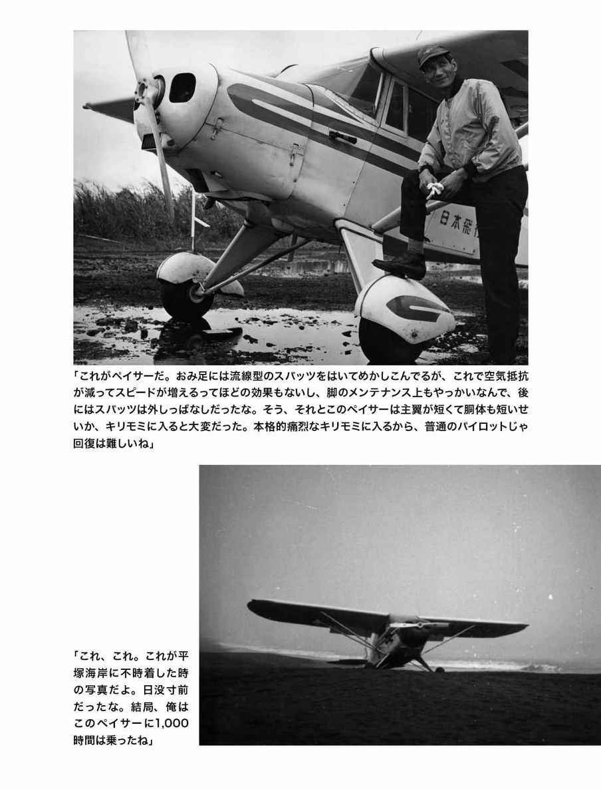
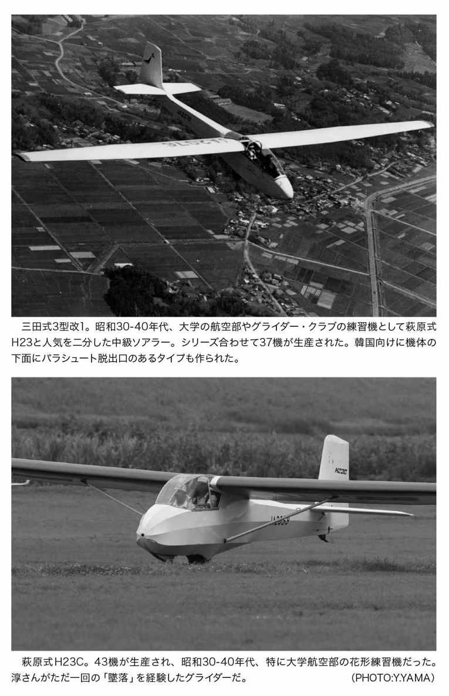
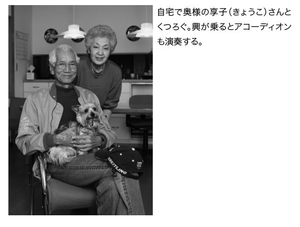
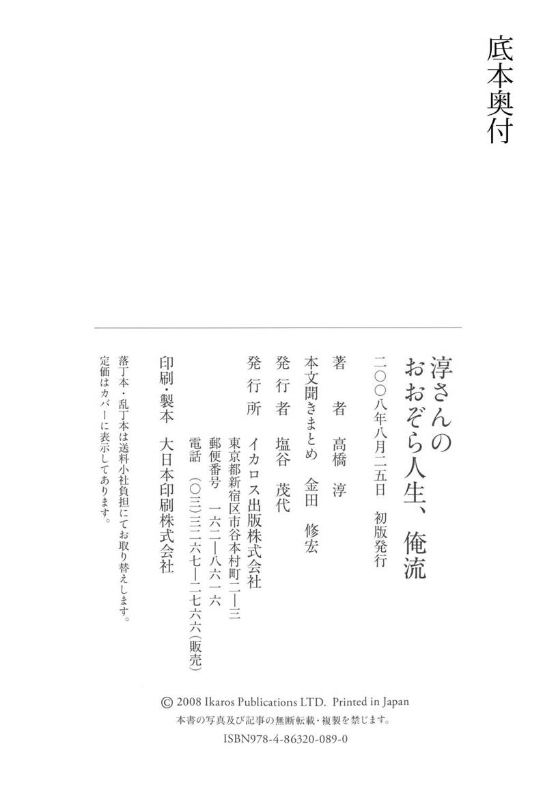

| 淳さんのおおぞら人生、俺流 | |
| 高橋 淳 | |
| (2017) | |
この電子書籍は、縦組の底本を元に作成しました。
淳さんの おおぞら人生、俺流 ＊目次
日本人離れした身の丈と風貌、その開けっぴろげで闊達な性格、
歯に衣着せぬ物言いで、大空の自由人は今日も空とつきあっている。
たくさんのパイロットを育て、たくさんの飛行機に乗り、
あらゆる経験をしながら、まだ空の楽しみは尽きないという。
多くの後輩や仲間から「淳さん」「淳さん！」と頼りにされ、慕われ、ざっと70年。
めげない、こだわらない、ぶれない、
ひとすじに空とともに生きる「淳さん」の話を聞いてみようよ。
飛行機はつまりレディなんだよ。そこを間違えるとひどい目に遭うって。
いつの時代でも、「パイロット」ってのは男の子の憧れの職業さ。それに誰だって一度は「自分で空を飛んでみたい」って思うもんだろ？
俺自身がそうだったからね。16歳の中学生からグライダーを始めて、20歳ぐらいで飛行機のパイロットになって、気がつきゃもう70年も空を飛んでる。今年（平成20年）で86歳になるから、日本のプロ・パイロットとしちゃ現役最高齢だろうな。
パイロットと言ったって、ジャンボ・ジェットの旅客機を操縦するだけがすべてじゃない。俺みたいに小型機を飛ばすプロもいれば、レジャーで自家用飛行機やグライダーに乗るアマチュアだってれっきとした飛行機乗りよ。ジェット戦闘機を操るやつだっている。もっともジェット戦闘機は鉄砲玉に羽根つけたようなもんで、まったくもって俺の好みじゃないがね。
大型の旅客機なら、乗ったことのある人は多いだろう。だが、パイロットや飛行機マニアでもない限り、小型機ってのはあんまりなじみがないだろうね。
小型機ってどんなのか知ってるかい？ セスナのことだろうだって？ 答えとしちゃ50点だな。セスナは飛行機メーカーのひとつにすぎない。世界的に有名なメーカーには違いないが、ほかの会社が作ってる小型機もたくさん飛んでる。どんな飛行機があるかは、あとで詳しく説明するよ。
飛行機ってのは種類によってクセがあるから、パイロットなら誰でもすぐに操縦できるってわけじゃない。まあ、今の新しい飛行機は性能もいいし、エンジンも装備も進歩してるんで、操縦はうんとラクにはなってる。上空に上がっちまえば、旅客機みたいにオート・パイロットで手放しで飛んでいられる機体もあるくらいだ。だが、古い飛行機でも現役で飛んでるやつはあるし、ちょいと操縦が難しい機体だっていっぱいある。
クルマだってそうだろ？ オートマの車しか乗ったことのない人間が、いきなりマニュアルのスポーツカーやＦ１のレーシングカーを乗りこなせるかって話だ。
しかも飛行機を飛ばすのは、道路でクルマを走らせるのとはわけが違う。常に落っこちる危険と隣りあわせ。危なくなったら止まればいいってもんじゃない。特に離着陸の時や天候の悪い時がいちばん神経を使うんだが、飛行機によって離着陸の感覚が微妙に違ってくるから、操縦するほうはけっこう大変さ。
長いパイロット人生のなかで、俺はグライダーも含めたらゆうに50機種以上に乗ってきた。それだけいろんな機種を乗りこなせるってのは、戦争中に昔ながらの飛行機にさんざん乗った経験があるからだろうね。そういう古い飛行機の操縦ができれば、どんな飛行機だって何とかなるもんよ。昔の飛行機はシンプルなだけに操縦の原点がそこにあるんだよ。
そんな俺に言わせりゃ、飛行機ってのはすべて女性なんだな。フランス語では、飛行機や車、船には女性冠詞"la"を使うだろ。あれは正しいね。旅客機なんてのは田舎の力持ちのおばさんだ。小型機のなかにもそういうおばさんはいる。素直な娘もいりゃ、お転婆娘もいるね。それぞれ扱い方を間違ったら、痛い目に遭う。その日によって機嫌もいろいろだしね。女性も飛行機も同じってことよ。ついでに言えば飛ぶために大切な天候も女性だと思うよ。すぐに機嫌が変るしね。
だからパイロットたるもの、飛行機は女性を扱うように操縦しなきゃいけないね。機体の特徴やクセにあわせて操縦するってことだ。それこそ女性をエスコートする気持ちでね。
乱暴に舵を動かしたりして、機体に負担がかかるような操縦をしちゃダメさ。大事にいたわるように舵を切る。それが結局は、いいフライト、そしておのれの身の安全につながるんだよ。
しかし、軍用機ってのは自分が経験した印象からいえば、操縦してる自分の身体そのものだね。女性だなんて思ってられないよ。弾が当りゃ痛いし、お陀仏かもしれないしね。
たとえば尾輪式と前輪式の違い。これ、けっこう今も大事な問題だ。
さて、先に飛行機の構造的な話を簡単に片付けちまおう。
飛行機はね、飛ぶように出来てるんで、地上で動くには不便なんだ。クルマや自転車は手でハンドル回して簡単に方向を変えられるけど、小型機は足で左右のペダルを操作して方向を変える。ペダルが方向舵や車輪のステアリングに連動してるんだね。速度によって方向舵とステアリングのどちらか、または両方を使い分けなきゃならない。その上、長い主翼を持ってるし、自ら起すプロペラの後流を含めて地上では風の影響を受けやすく、つまりヨタヨタしながら走ってるわけよ。
昔の飛行機は「尾輪式」といって、主輪のほかにお尻に車輪がついてた。
それに対して、今の機体は頭に車輪がついてるから「前輪式」。前輪は可動式になってるから、地上では一応クルマと同じ感覚で操縦できる。
尾輪式と前輪式の大きな違いは、地上に置いてあるときに胴体が地面に対して斜めか平行かってことだ。前輪式は地面と平行だから前方の風景がよく見える。前がよく見えて、クルマみたいに操縦できるんだから、そりゃラクだよな。
一方の尾輪式、こいつは機体のお尻から頭にむかって斜め上を向いてるから、地上で滑走してる間は肝心の滑走路が見えない。視界に入るのは、機体の頭と空だけ。おまけにお尻に可動式の車輪がついてるから、離着陸させるのはそう簡単じゃないんだよ。
その理由はこうさ。ちょっと専門的になるが、プロペラってのはほとんどがパイロットから見て右回転でね。その回転によって生まれた気流の渦の影響で、滑走を始めた機体はどうしても左へ左へと行こうとする。プロペラの回転で生まれた右回りの気流が、機体をまわって尾翼の左側から押すわけだ。
その力に負けないようにちょっとしたデリケートな操作が必要になるんだが、尾輪式は機体のお尻と地面との間が狭くなってるから、前輪式みたいに右回りの気流が機体の下を抜けることができなくて、より強く左側から尾翼を押してくる。それだけでも前輪式とは操作の仕方が違ってくるのに、お尻にタイヤがついてるだろ。三輪車を後ろと前を逆にして走らせることを想像してみてよ。しかも後の一輪にハンドルがついてないって状況でね。こりゃ、サーカスの曲乗りみたいなもんだ。
で、滑走のスピードがのってきたら、尾輪式はまずお尻を先に浮かさなきゃいけない。そうすると、左側から当たってた風が機体の下をすり抜けて影響が弱まる。その時にそれまでと同じ勢いで舵を使っていると、今度は逆の右方向にそれようとし始める。
そんな具合だから、尾輪式の機体をまっすぐ走らせるのは非常に難しいのさ。初心者は走ってるうちに滑走路からはみ出して、しまいには機体を逆立ちさせちまうのがオチだ。
そして今度は着陸。これは操縦教本じゃないんで詳しくは別の機会に譲るが、着地寸前にスピード・オーバーでフワーッと浮いてしまうバルーニング、着地した後、スピードが遅くなって舵の切れが悪くなり、機体がちょいと横向きになったり、逆向きになっちゃうグラウンド・ループとか厄介なくせがあってね。尾輪式の飛行機は手強いわけよ。
でも、ほんとの意味で舵の基本を身につけようと思ったら、尾輪式みたいに飛行機が飛行機らしかった時代の機体に乗るのがいちばんさ。今でも尾輪式の小型機はけっこう飛んでるし、アメリカやカナダなんかの山岳や荒野の草原や谷間の未整地に短距離で離着陸する小型機は尾輪式が圧倒的に多い。操縦は難しいがメリットも未だに大きいわけだ。
俺は太平洋戦争時代にそんな飛行機をさんざん乗り回した。あとで詳しく話すが、旧海軍の教官に頭をボコボコ殴られながら訓練して、部隊が全滅するような激戦地で飛んでたんだよ。そういう尋常じゃない状況のなかで体で覚えた技術ってのは、やっぱりいつまで経っても忘れないもんだね。
だから今の時代の若いパイロットが、たくさんの種類の機体を乗りこなせないのは無理からぬことではあると思うよ。プロ・パイロットのほとんどは航空会社に所属してるから、会社で持ってる飛行機以外に乗る機会が少ないって事情もあるしね。
その点、俺は49歳で独立してフリーのパイロットになったから、いろんな機体に乗るチャンスは山ほどあった。そんときに「この機体には乗れません」なんて言ってたら、商売すぐに上がったりだ。一匹狼でやると決めた以上、頼まれたら乗るのがプロってもんだ。
それに、乗ったことのない機体に乗るってのは、俺にとっちゃいちばんの楽しみでね。どんなクセを持ってるのか、ヒコーキ野郎の心がくすぐられるのさ。
ほんと、飛行機が好きなんだよ。
小型機パイロットの仕事っていろいろ。大空の何でも屋かな。
尾輪式と前輪式の違いはわかってもらえたかい？ それさえわかっただけでも、小型機を見る目がぐっと変わるはずさ。もっとも、尾輪式の飛行機は国内ではすごく少ないけどね。
なに？ 小型機のパイロットはどんな仕事をしてるのかって？
オーケー。じゃあ、そいつも簡単に話しておくとしよう。
まず大型機と違って、小型機が旅客や荷物の輸送に使われることはあんまりない。積める人数と荷物が少ないから、よほどの事情でもない限り、そんなことしてたら採算に合わないからね。
仕事としてもっとも多いのは、航空測量と斜め写真撮影だ。たとえば国内地図。あれを作るために、カメラマンを乗っけて目的地上空に行って写真が撮りやすいように飛行機を飛ばすのさ。
それから、機体のテスト飛行。新しい飛行機を海外から輸入したとき、マニュアルどおりの性能かどうか、計器類が正常に動くかどうか、実際に飛ばして確認する。機体をオーバーホールしたあとにも、同じようなテストをするね。
そしてもうひとつ、パイロットをトレーニングする教官業だ。アマチュアだろうとプロだろうと、飛行機に乗るには免状をとらなきゃいけないから、操縦を教える人間も当然必要になる。まあ、自動車教習場の教官ってとこだな。だが、俺は鬼教官じゃないし、画一的な教え方もしない。その人の技量とか性格を考えて段階的に教えるね。気になるところ全部をいちいち注意してたら、教えられるほうはイヤになっちまうだろ。だから１回飛ぶときにアドバイスするのは１つか２つ。あとはほめてやる。戦争に行くパイロットを育てるんじゃなくて、レジャーで飛ぶ人が相手なんだ。楽しんで飛んでもらえるような教え方をしなきゃな。
そうそう、昔は飛行機にスピーカーを積んで、空から宣伝放送を流すって仕事もたくさんあった。こいつがいちばん航空会社が儲かったんだけど、今は法律の規制でできなくなっちまったよ。
ほかにも、遊覧飛行とか報道やテレビ、映画の仕事もある。
こういった仕事は専門の航空会社が請け負って、そこに所属するパイロットがやってる。
だが俺の場合はフリーだから、あちこちの会社から頼まれていろいろと飛び回ってきたわけよ。
どこにも属してないから、会社の重役機や個人のお抱えパイロットをしたり、アマチュア・パイロットから個人的に頼まれて教官をしたりってこともやったね。自家用機を持ってる中小企業の社長さんってのは、自分でも免状を持ってるから一人でも飛べるんだが、そういうことは滅多にしない。安全のために、必ずお金を払って俺みたいなプロ・パイロットを"セイフティ"として同乗させる。それがほんとの金持ちってことだな。
俺は今でも現役だが、さすがにこの歳だから、昔みたいになんでもかんでも仕事引き受けて毎日飛びまわってるってわけじゃない。ちなみに言っとくが、「昔みたいに」ってのは60歳から70歳にかけてのことだから誤解のないように。サラリーマンの世界じゃ60歳くらいが定年らしいが、俺はそのころが絶頂期ってなもんで、ガンガン飛んでたんだから。
今は社団法人日本飛行連盟って組織の名誉会長をやってて、週に少なくとも１日は調布飛行場にある事務所に顔を出してる。飛行連盟には１９５３年の設立から１９７９年に俺が独立するまで所属してて、それ以後もずっと関わっててね。２００２年からは理事長をやってたよ。正直な話、連盟のことを知り尽くしたベテランの事務員さんが２人いてよくやってくれてるから、俺がいなくても平気なんだけど。まあ、黄門様のご印籠みたいなものってことでカンベンしてくれ。
毎週週末は、静岡県の富士川滑空場に出かけて、静岡県航空協会の社会人クラブでグライダーや小型機の教官をやってる。このところはクラブ員のグライダーに同乗することは少なくて、グライダーを曳航する飛行機を操縦してることのほうが多いな。もちろん、地上であれこれアドバイスはするがね。
このクラブとはもう40年来の付き合いで、今も相変わらずクルマで東名高速をブッとばして通ってる。飛ぶのが好きな連中が集まってるから、ここで１日過ごすのはじつに楽しいね。
それから、赤十字飛行隊では４代目の隊長を務めてる。この組織は日本赤十字社直轄のボランティア団体で、俺は１９６３年の設立時から参加してるよ。今じゃ全国各地に38の支隊があって、アマチュア・パイロットや企業やらがメンバーとして協力してくれてる。どこかで災害が起きたときに、医療品や救援物資、医療スタッフなどをいち早く空輸するんだ。昔は俺も新潟地震、秋田沖地震、大島の大火、東北の水害とか、大災害が起きたときには救難活動にあたったもんだ。今でも離島への血液輸送は毎年やってるね。大島だったら、片道30、40分で行っちまうよ。
ほかにも、自家用機のオーナーに頼まれて飛んだり、講演会で話をしたり、お役所関係の話し合いに出席したり、なんだかんだいろいろやってるな。家のなかでじっとしてるのは好きじゃないから、まあ結構なことだ。
ついつい自己紹介がてら、俺のことをたくさん話しちまった。わかってるって。パイロットの仕事の話だろ？ 次は小型機パイロットの仕事が実際にどんなものか、経験談を交えて話していくとするかな。
航空写真の撮影は墜落注意！ 低空飛行で無理をする。
まずは航空写真、航空測量だ。
写真にしろムービーにしろ、いい絵が撮れるかどうかは、パイロットの腕にかかってくる。どんなに腕のいいカメラマンを乗っけても、撮影しやすい態勢で飛ばさなきゃ意味がないからね。撮影するときは低空で飛ぶことが多い。おまけに、写真がぶれないようにスピードを落とす必要もある。
だが、低空をスピードを落として飛ぶってことは、飛行機にとっちゃいちばん危険なことなのさ。機体が失速しないギリギリまで速度を落とすと、舵の使い方をちょっとでも間違えただけで墜落しちまう。高度が低いから、機体が失速したときに立て直す余裕がないんだよ。
だから街中とか住宅地の上空で撮影するのは怖いね。実際、低空で写真撮影をしていた飛行機が今までにたくさん落っこちてる。２００４年にも、山梨で学校の校舎を空撮してた小型機が住宅地の駐車場に墜落した。30代の若い女性パイロットとカメラマンら３人、全員が死んじまったよ。
法律では、３００メートル以下に高度を下げちゃいけないことになってる。だが学校なんかを写すときには、カメラマンはもっと下に降りたいわけだ。いい写真が撮りたいから、もっと降ろしてくれとかスピードを落としてくれとか無茶な要求をしてくることも結構ある。そういうときに、若いパイロットはだいたい言いなりになっちまう。だがベテランになると「ダメだ」って突っぱねる。俺たちゃプロだからね、安全性を考えてダメなものはダメだって断る勇気も必要なんだ。
一方、航空測量をする場合には、数千メートル上空を何時間も飛ぶ。だから酸素マスクは必需品だ。３、０００メートルを超えたら酸素なしで長時間は飛べないよ。一度だけ、いつもより１人多く乗っけてるのを忘れて長い間飛んでて酸欠になったことがあったな。頭がボーッとするなか、慌てて急降下したよ。
測量のときは、１億円ぐらいする大きなカメラを積んで、地図上に何本も直線を引いてそのとおりにまっすぐ飛ぶ。たとえは悪いが、戦争中に大型攻撃機で爆撃するときの操縦と似てるね。
ところで、俺は安全第一、乗ってる人に快適なフライトを信条としてるが、若いときにはカメラマンを怖がらせるために、わざとギリギリの操縦をしたこともあったな。俺も若かったってことで、許してやってくれよ。
自作機のテスト飛行は俺の独壇場だ。
お次はテスト飛行だ。
クルマに車検があるように、飛行機も１年ごとに機体の検査を受けなくちゃいけない。飛行機の部品はすべて時間で管理されてて、パイロットは１回飛ぶごとに飛行時間を記録しておく。部品ごとに「何時間飛行したら交換しなさい」って決められてるのさ。たとえば、エンジン・オイルなら50時間ごとに取り替えが必要だ。そして飛行時間がそれぞれに決められた時間になったらエンジンや機体を分解して新品みたいに直す。いわゆる「オーバーホール」ってやつよ。だからきちんと整備していれば飛行機は何十年でも飛べるんだ。
いずれにしても機体の整備が済んだら、今度は検査官を乗っけて飛んで「このとおり大丈夫」ってことを証明する。それがテスト飛行。このテスト飛行をパスしない限り、飛行許可はもらえないね。
海外から輸入した機体も、オーナーに渡すまえにテストをする。メーカーが現地でテストしてはいるが、メーカーが発表したデータが絶対だとは限らないだろ？ あくまで現地で検査したときの条件やコンディションで得られたものだし、気候なんてのは特に海外と日本じゃ違ってくるしね。
だからマニュアルをもとに、日本で飛ばしたときにどうかってのを検証する。最高速度がマニュアルどおりの数字かとか、実際にそれだけのスピードを出しても異常がないかとか、いろいろと。
その中でもいちばん重要なのは「失速速度」よ。こいつはスピードを落としたとき、機体が墜落しないギリギリの速度のこと。それを確かめるときは、実際に機首がガクンって落っこちるまで減速する。もちろん、高度を高くとってやるから墜落することはない。まあ、同乗する検査官にしてみりゃ、あんまり気持ちのいいもんじゃないかもしれないな。青い顔して「そこまでしなくていい」って言ったやつもいたっけ。
テスト飛行が済んでも、仕事は終わりじゃない。その機体をオーナーのところまで自分で操縦して届けるんだ。俺がテスト飛行をよくやってたころは、調布飛行場内に整備会社があったから、調布から航空大学のある宮崎や全日空の訓練場があった熊本まで何度も空輸したもんだ。
自家用機や売り物の機体、海上保安庁や航空大学、全日空や日本航空が使う訓練機。飛行機のテストはさんざんやったよ。
けどよ、俺は個人が趣味で作った自作機のテストもやってるんだ。そういう飛行機は「ホームビルト機」といって、アメリカあたりじゃけっこうメジャーな趣味だよ。日本で素人さんが作った飛行機のテストは、ほとんど俺がやってるんじゃないかな。２─３年前にも、近所のコンビニのオヤジが作った飛行機を飛ばしたぜ。自作機のテストは、ほかにやるヤツがいなくてね。そりゃそうだ、メーカーが作った機体じゃない。アブねえんじゃないかって思って当然だ。
初めて自作機をテストしたのは、昭和42年ごろだったかな。
当時の調布飛行場には、飛行連盟の事務所のとなりにアジア航測って会社があって、もう亡くなっちゃったけど昔かたぎの整備士がいたんだ。いろんな会社が集まってる調布飛行場では、世話役というか村長さんみたいな存在だった。
あるとき、その人から「知り合いの大工が飛行機を作ったから、飛んでやってくれない？」って頼まれてね。断るわけにもいかず、引き受けたわけだ。
この自作機の動力は、フォルクスワーゲンの１２００㏄のエンジンだった。クルマのエンジンを積んじゃうところがいかにも自作機らしいだろ？ たった30馬力だけどちゃんと飛びはした。飛びはしたが、あとで「飛行機を作ってから図面を書き上げた」って聞かされたときは、ぞっとしたな。
そのとき、大工の仲間のそば屋も来てて「実は私も飛行機を作ってまして、できあがったら飛んでくれませんか」と言ってきた。こっちは内心「どうせ完成しないだろうよ」って思ってるから、「いいよ」って軽く答えておいたんだよ。
そしたら、２年ぐらいしてほんとに飛行機ができあがっちゃってさ。「あのとき飛んでくれるって言ったじゃないですか」って迫られたんで、飛んだんだよ。
そうやっていつの間にか自作機のテストもするようになって、全部で10機ぐらいに乗ったと思う。
ほかのパイロットには「淳さん、よくそんな機体に乗るな」って言われたもんだ。実際、そう言われてもしょうがない機体も多かったのさ。なかにはいい機体もあったがね。 もちろん、そういう飛行機は飛ぶ前の徹底的な機体チェックは欠かせない。昔から信頼している整備士に見てもらって「構造上も強度的にも問題ない」っていうお墨付きをもらってからでないとな。
テストするときは、最初は滑走だけにする。それで様子を見てから１─２メートルほどジャンプさせてみて、そういうのを何回か繰り返したあとで、高度を上げて飛ぶ。メーカーの飛行機じゃないから、性能データなんてありゃしない。実際に操縦して俺自身が決めるんだ。離着陸するときのスピードから失速速度まですべてね。飛行中に機体が不自然に傾いたりしないか、そういう不具合がないかどうかも確認するよ。そりゃ不安もあったさ。だが、うまく調整してまともに飛ぶ飛行機にしてやったっていう楽しみもあるんだよ。
怖さ半分、楽しさ半分。それが自作機のテストさ。

空文字はアクロバット飛行で。意外としんどかったな。
宣伝放送の仕事については、特に話をするほどのもんでもない。選挙の棄権防止とか店のオープンの宣伝とかを空中からスピーカーで流すんだよ。風の具合によっちゃ、地上で全然聞き取れなかったとか、効果のほどはそのとき次第。もっと昔には宣伝ビラをまいたりもした。でも、拾おうとした子供が電車や自動車にひかれる事故が相次いで、結局は禁止されたよ。そういや、ひとつ変わりダネのエピソードがあったな。同じ宣伝でも、放送じゃなくて空文字だ。
１９７０年代、つまり50代から60過ぎにかけて、俺は航空ショーやイベントでアクロバット飛行もやってた。俺が操縦を教えたあるアマチュア・パイロットがアクロバット用のピッツって飛行機を持ってて、その人と組んで全国のあちこちでアクロバットを披露してたんだよ。
あるとき、西武デパートに頼まれて空文字を書くことになった。大阪の八尾に新しく出店するから、その開店記念と宣伝を兼ねたイベントさ。空文字を書くときは、アクロ用の飛行機にスピンドル油っていう専用のオイルを積んで飛ぶ。そのオイルをエンジンのマフラーにタラタラ垂らすと、燃えて白い煙が出るのさ。そいつがインクだとすりゃ、飛行機はペン先よ。
西武デパートの注文は、空中に「ｓｅｉｂｕ」って書くこと。
地上から見て読めるようにするには、上空では裏文字にしなきゃいけない。しかも逆方向から書かなきゃダメだ。だからどういうふうに飛べばいいか、まず紙のうえで文字を書いて確認して、埼玉県の桶川飛行場でリハーサルをやってみた。
原稿のイメージどおりに飛んで「どうだ、読めるか？」って地上のヤツらに聞いたら、「読める」って言う。これならイケるってことで、仕事を引き受けたんだ。
当日、俺は大阪の上空１、５００メートルから２、０００メートルぐらいまでアクロバット機を上昇させた。文字にする煙は外気温が零度以下でないとすぐに消えちゃうから、温度が低くなる高さまで上がらなきゃいけないわけよ。温度計が零度を指しはじめたあたりで、リハーサルどおり急旋回の連続で煙で文字を書いてく。で、書き終えたらパッとオイルを止める。それで一丁あがりだ。
「ｓｅｉｂｕ」って文字を５回も書くと、オイルがなくなった。だから５回書いたらいったん着陸してオイルを補給して、また上がってぐるぐる飛び回る。間違っても消して書き直すわけにはいかないから、そりゃ神経を使ったな。仕事が終わったときには、さすがにグッタリだ。猛烈に疲れたよ。あんなに飛んでて疲れたのは一式陸攻で雷撃に出動したとき以来だったな。もっとも失敗したって撃墜されるわけじゃないから、緊張感ははるかに少なかったがね。
ところでアクロバット、つまり曲技飛行ってのはパイロットは自分で意識してやってるから、気分悪くなってゲーッなんてことにはならない。だが、二人乗りのアクロ機で同乗してる奴ってのはたいがい気分が悪くなるなるんだよ。たとえパイロットでもね。自分で操縦桿を握ってないと酔うんだよ。もっとも、宙返りしたり横転したりの連続だから、１回やったらもうこりごりだって言うパイロットもいる。アクロが好きになれない、向いてないって人ね。
アクロバットに慣れてないうちは、機体を横転させると地面や空が回ってるような感じがする。ところが、地面や空が回ってると錯覚を起こしてるうちは初心者。従って危ない。自分が回ってるって感覚がないとダメなんだよ。このときみたいに街の上空で飛んでるときに墜落なんかしたら、それこそ大惨事さ。
しかしああいうイベントは、今は許可が下りないだろうな。
報道関係の仕事で飛んだこともあるが、テレビや映画でも結構飛んでるね。
１９５８年に石原裕次郎主演の映画『紅の翼』で飛んだのが最初だ。飛行連盟のメンバーだった自家用機のオーナーが頼まれた仕事だったんだが、一人じゃ間にあわないって言うんで手伝ったんだ。新潟の海岸で撮影したが、フライトとしちゃたいしたもんでなかったんであんまりよく覚えちゃいない。
思い出深いのは、ＴＶドラマ『ザ・ガードマン』よ。一発目は１９６５年ごろ、そのあとも全部で４、５話には出たと思う。主演の宇津井健が飛行機を操縦するときの吹き替えをやったり、モーターグライダーを低空で飛ばして悪党たちを蹴散らしたり。女優の姿美千子が出演するストーリーもあったんだが、彼女、じつに可愛かったね。いっしょに写真を撮ってもらったよ。もっとも、今の若いやつらは彼女のこと知らないだろうな。
このドラマ、ＤＶＤが出てるみたいだからよかったら見てくれ。特に「ガードマン、空へ」って話では、当時、飛行連盟の支部があった茨城県の竜ヶ崎飛行場が出てくるし、スチンソンＬ─５って飛行機の炎上シーンも見られる。当時の飛行連盟を知ってる人間が見たら、きっと懐かしく思うだろうよ。
映画では、千葉真一と真田広之、秋吉久美子が出演した『冒険者カミカゼ』ってのにも出た。千葉真一の吹き替えでアクロバット機のピッツを飛ばしたのさ。テレビだと「夢と冒険 アメリカ大横断」（この番組をもとにして「アメリカ横断ウルトラクイズ」が誕生したらしい）っていうクイズ番組にも出たし、女優の浅茅陽子に飛行機の操縦を教えて一週間で飛べるようにするっていう特番もやった。何かの番組では武田鉄矢を乗せて飛んだし、４年ぐらい前には「ナイナイサイズ」って番組でナインティナインのやべっちといっしょに飛んだよ。
吹き替えはともかく、ほかの仕事は純粋な意味でパイロットの仕事とは言えないがね。まあ、飛行機乗りの「役得」みたいなもんさ。
グライダーの曳航、これは相手があるから難しい。
グライダーの曳航の仕事も昭和30年代後半から、数え切れないくらいやったね。これは、グライダーが自分では動力を持たないから、ウインチや飛行機の力を借りて高い上空まで連れてってもらうわけだけど、飛行機で引っ張る方をグライダーの飛行機曳航って言うんだよ。
飛行機のおしりとグライダーの機首部を曳航索という50ｍほどの長さのナイロンのひもで結んで、離陸するんだ。昔はナイロンじゃなくって鉄のワイヤー・ロープでしかも１２０ｍも長さがあったから、離陸するだけでもそりゃ大変だった。グライダーを離してからも安心なんかできなかったね。飛行場上空に戻ってきても、まずおしりから垂れ下がってるワイヤーを切り離して、もう一度ぐるっと場周経路を回って着陸しなきゃいけなかったんだ。ほんとに手間のかかる仕事だったよ。
グライダー曳航の難しさは、何しろ飛行機は余分なお荷物をはるか後ろにかかえているわけだ。グライダーのパイロットの操縦がまずいと、前の飛行機も上下左右に引っ張り回される、一方で飛行機のパイロットの方も後ろのグライダー・パイロットの気持ちがわかってないと同じような思いをさせるわけだ。だから、曳航機のパイロットはグライダーの操縦資格を持ってることがほとんどだ。離陸もね、後ろのグライダーが飛行機より早く高度を取っちまったら、飛行機はケツが上って前につんのめっちゃう。技術的なルールはもちろんあるんだけど、お互いに思いやらないとうまくいかない。相手がある仕事の難しさだね。
昔はよく、グライダーを曳航して東京から大阪や仙台まで飛んでったもんだ。競技会や研修会があると全国からそこにグライダーが集まってくるんだよ。曳航したまま４時間、５時間も飛ぶっていうのはどっちのパイロットにとってもすごい艱難辛苦だった。冬だとヒーターの有無がけっこうな問題だったりしたね。飛行機はヒーターがあるからいいが、グライダーにはヒーターなんかついちゃいない。何時間も飛んで、向こうの飛行場上空に着くと、まずグライダーを切り離してやったさ。するとグライダー、待ってましたといわんばかりに急降下さ。そう、トイレだよ、トイレ。
模型飛行機に夢中だったお坊ちゃん、それが原点だ。
ここからは俺がフリー・パイロットになるまでの話だ。昔話になるが、ちょいと聞いてくれ。
飛行機乗りになろうって決めたのは、小学校４、５年生のころだ。俺は大正11年、つまり１９２２年生まれだから、昭和ひとけたの前半のころの話だ。
模型飛行機が大好きでね。組み立てキットを買って作ったり竹ひごで骨組みして自作しては、飛ばして遊んでたよ。ゴム動力のプロペラ機だったが、これがけっこう飛ぶんだ。飛距離を競う大会にもよく出たし、うちの庭は広かったからさんざん飛ばしたもんだ。
父親が医者だったから、お屋敷に住んでたんだよ。裏庭にテニスコートがあるくらい広い敷地で、お手伝いさんが２人とお抱えの車夫がいて、自家用の人力車もあった。人力車だぜ、人力車。
高橋家ってのは、代々医者の家系でね。赤坂の溜池に病院を構えてて、その近くの霊南坂に本宅があったんだが、俺が生まれる少し前に関東大震災が起きて、きれいさっぱり焼けちまった。さいわい大森に別荘があったから、その敷地内に病院を移した。俺はその別荘で育ったんだ。
４人兄弟の末っ子で、兄が２人と姉が１人いた。３番目の子供だった姉とさえ９つも年が離れてて、俺が小学校１年生か２年生ごろに父親が死んじまったから、おふくろにはすごく可愛がられて育てられた。金持ちの家の末っ子だからね、そりゃあ勝手気ままが許されたよ。医者の家なのに「飛行機乗りになる」ってこと自体が、当時は破天荒だったのさ。
小学校は暁星に通ってた。暁星って言えば、今でも幼稚園から高校まで一貫教育をしている進学校。当時だって、慶応とか青山学院とか有名私立大学に進むのがお決まりのコースよ。
ところが俺は、模型飛行機を作って飛ばすことに夢中になってたくらいだ。学校のお勉強ってのが大キライときてる。それでも、おふくろは決して「勉強しろ」とは言わなかった。落第しなきゃいい、70点、80点の成績で構わないって。何ごとも真ん中ぐらいがちょうどいいんだって、よく言われたよ。末っ子だから好きなことをさせようって考えてたんだろうな。
暁星は飯田橋にあった。大森から東京までは京浜東北線、東京から飯田橋へは中央線に乗って通学してた。当時の京浜東北線の車両には今でいうグリーン車があって、俺はそれの定期券を持ってたよ。すげーだろ。
生意気なもんで、小学校６年生ぐらいになると、帰り道は銀座の街をぶらぶら歩いたりしてたな。銀座に松屋っていうデパートがあるだろ。うちは松屋の得意客で、新柄の反物が出たりすると、その中の呉服部の番頭がうちまで直接、おふくろや姉に売りに来てたんだ。だから、その番頭とはすっかり顔なじみになってて、学校帰りに松屋によっては「呉服部の◯◯さんにツケておいて」っておもちゃを買ってた。あんまり高いものを買うとおふくろに叱られたけど、ツケで買うなんてことをしても平気だったのさ。
いちばんのおもちゃって言えば、もちろん模型飛行機だ。飯田橋駅のそばに模型屋があって、学校の帰り道、そこでもよく模型飛行機を買ったもんだ。
要するに、俺はお坊ちゃんだったわけよ、とりあえず。
時代は民間じゃなかった。とりあえず海軍のパイロットになってやれ！
初めて空を飛んだのは１９３８年、16歳のときだった。昭和13年だから、もう日本の周囲には戦雲が暗く立ち込めていたころだ。
千葉県の鹿島灘で当時の東京日日新聞社（現毎日新聞社）が開催したグライダー講習会に参加したんだ。
今のグライダーは曳航機やウィンチで引っぱって飛ばすが、当時はパチンコ式。機体のお尻を杭につなげて固定し、機体の先にゴム索をつけて、６、７人でそのゴム索をＶ字型に引っぱる。そしてゴム索が伸びきったところで、機体を杭から外すのよ。そうすると、機体がピューっと飛ぶ。戦後も昭和40年くらいまでは、このパチンコは大学のグライダー部なんかの最初の練習に使われてたよ。
パチンコに使うグライダーはプライマリーという初級機で、木製の骨組みに翼だけ布を張った機体。操縦席に覆いなんてありゃしない。操縦桿を握ってるときは全身まる出しだ。しかも一人乗りで、教官が同乗して手とり足とり教えてくれるわけじゃないから、初心者でもすべて自分で操縦しなけりゃいけない。だから最初は舵取りに慣れるために、機体が浮かない程度にゴムを引っぱる。そして徐々に引っぱる長さを伸ばして、機体がちょっとずつ浮くようにして訓練していくんだ。
最初のフライトはたった30秒ぐらいだったが、そりゃ気持ちがよかったね。自分自身が飛ぶ感覚を初めて味わったんだから。30秒がものすごく長く感じられたよ。
グライダーはその後も２、３年続けた。その頃にはどうすればパイロットになれるか、本気で考えるようになってたな。
そのころから、操縦士の免状を取るには、民間の飛行機学校に入るって方法もあった。 だが当時は、支那事変が起きて軍隊が中国に行ってるような時代だ。20歳になれば徴兵検査を受けさせられて、軍隊に入隊させられることは目に見えてる。だったら最初から軍隊でパイロットになってやれって、予科練を選んだのさ。
予科練ってのは「海軍飛行予科練習生」の略で、少年を集めて海軍のパイロットとか偵察員などの搭乗員を養成する制度のことだ。暁星を卒業して予科練に入ろうってやつなんて、その当時でもほかには誰もいなかった。そりゃそうさ、大学に進学するのがあたりまえの学校なんだから。受けるとすりゃ、海軍兵学校か陸軍士官学校あたり。でもそれじゃ、パイロットになれるかどうかまったく保証はない。
不思議なことに、うちの家族は反対しなかったね。あとから聞いたところだと「自由きままに育ったから、すぐに厳しい軍隊生活に嫌気がさしてしっぽ巻いて帰ってくるだろう」って考えてたらしい。
ところで、予科練ってところは誰でも入れるわけじゃない。学科試験があって、合格率が何十分の一っていう難関だ。なんとしてでもパイロットになりたかったから、勉強ギライの俺もすいぶん勉強したよ。その甲斐あって、無事に予科練に入ることができたのさ。
だが、合格したからといって、パイロットになることを約束されたわけじゃない。適性検査ってのがいろいろあって、操縦士の適性がないと判断されると、偵察員、無線通信士、機銃士などに振り分けられるんだ。水上機に乗って実際に操縦する検査もあったが、俺にはちょろいもんよ。グライダーに乗ってたから、なんの問題もなかったね。
それにしても、適性検査ではなぜか手相や人相まで見るんだから驚いたよ。パイロットに向くかどうか、海軍専属の占い師が判断するのさ。俺の前後のやつらはこれでみんな落とされた。いい加減だったんじゃないかと思うが、しかし戦後の話じゃ、この人相、手相がかなり信頼度が高かったっていう説もある。昭和も20年を過ぎたあたり、つまり８月には終戦を迎える年に入ってから、手相・人相に「死相」が出る予科練生が急に少なくなったっていうんだな。予科練専属の占い師の回顧談さ。
とにかくこの占いもパスして操縦士組に残った。約８００人いた同期生のうち、操縦士組に残れたのは３分の１くらいだったよ。
ただ、俺は決して軍人になりたかったわけじゃなかった。予科練に入ったのはあくまで飛行機乗りになるためで、３、４年もしたら除隊して、民間パイロットになるつもりでいた。
ところが入隊してすぐ、真珠湾攻撃だ。
いずれ戦争になるだろうとは思ってたが、まさかそんなに早く太平洋戦争がおっ始まるとは夢にも思わなかった。あのニュースを聞いた瞬間、ああ、これで娑婆には当分帰れないな、とんでもねーことになったなって思ったよ。
零戦乗りをあきらめた、ちょっとした理由。
茨城の土浦にある海軍の土浦航空隊という基地で訓練が始まった。あの有名な霞ヶ浦よ。といっても、今の諸君は知らないか。いくつか海軍パイロットの訓練基地はあったが、霞ヶ浦は聖地みたいなもんだった。もっとも、そこがどんなところか知ってる地元の若い連中は、誰も入りたがらなかったと思うがね。訓練の厳しさは鳴り響いていたし、近所にいればそれを垣間見ることもあったろうしね。
宿舎生活で、外出が認められるのは日曜日だけ。夏休み以外、外泊なんて許されない。毎日、朝早くに起こされて、掃除、食事を済ませると朝礼だ。午前中は学科の勉強。あとはひたすら体育、体育。海軍の体操は「殺人体操」って呼ばれてた。とにかくキツいんだ。走り込みはあたりまえで、特にしんどかったのはボート訓練。カッターって呼ばれる手こぎボートに乗って、12本のでかくて長くて重いオールを片側６人、計12人でこぐ。みんなお尻の皮がずる剥けだ。そういう厳しい訓練によって、精神的にも肉体的にも鍛えられていったんだ。
何しろ起きてるうちは一瞬たりとも気を抜くことはできない。猛烈に厳しくて、もう殴られっぱなし。何かヘマをすれば、精神注入棒と称するデカい樫のこん棒で叩かれる。自分は悪くなくても、グループのなかで誰かがミスをすれば全員が殴られる。そうやって連帯責任ってものを叩き込まれた。近年、体罰がどうのこうのって問題になってるが、予科練や軍隊にいた人間からすりゃお笑いぐさだよ。
１年ちょっと続いた予科練の基礎課程では、飛行機ではなくグライダーで飛行訓練をした。グライダーの操縦は手慣れたものだったから、俺が教官みたいなものだったな。
その後、パイロット・コースに進むと、いよいよ飛行機の操縦訓練が始まった。
練習に使われたのは九三式陸上中間練習機、俗に「赤とんぼ」と呼ばれてたやつだ。複葉機といって翼が２枚あって、操縦席に風防なんてついちゃいない。だから飛んでるときは、ものすごい風圧さ。エンジンをかけるときは、発電機を手でぐるぐるまわさなきゃいけない。いかにも昔の飛行機って感じがするだろ？
練習生が操縦するんだから、事故なんか珍しくない。尾輪式ならぬ尾ソリ式だったから、離着陸はそりゃ難しかった。着陸に失敗して車輪を折るやつ、機体をひっくり返らせるやつ、いろいろいたよ。だが、そこは練習機。壊れてもすぐに直せちまう。機体が壊れても、人間はケガしないような作りにもなってた。
そのころにはもう太平洋戦争が始まってたから、とにかく早く一人前に育てようっていう即席教育さ。たとえば今セスナに乗ろうと思ったら、25時間くらい飛行訓練をしなけりゃ独りで飛ばせられないが、当時は10時間で単独飛行させられた。それで飛べないと、操縦士失格みたいな扱いだったよ。
当時の海軍では、最初は離着陸の訓練ばっかりさ。空中操作をたっぷりやってから離着陸の訓練をする現在とはまったくの逆。で、離着陸を徹底的に叩き込んでから単独飛行をやって、そのあとで急旋回とかアクロバットとか編隊飛行とかいろんなテクニックを覚えさせられる。

だが、空中で教官から口頭で何かを教わったという記憶はないね。覚えてるのは、何かにつけてこん棒で叩かれたことだ。へまをやると操縦席の後ろから、罵声と同時にパコーンと一撃がくる。練習生たちはみんな、飛行帽の下に布きれを２、３枚重ねてたよ。俺はグライダーの経験があったから、６時間ほど教官同乗のあとは、もう単独飛行してたがね。
そんな訓練を５、６ヶ月やってから、機種別の訓練が始まった。
海軍機には戦闘機や爆撃機などいろんな種類があるが、いずれにしても航空母艦に載せる「艦上機」と、陸上基地で離発着する「陸上機」とに分類される。
で、俺が選んだのは陸上機の大型機。要は、船に乗りたくなかったんだ。
予科練での教育中、山城っていう当時としても古色蒼然とした戦艦に乗って実習したとき、艦内のサイズが合わなくてえらい目に遭ってさ。艦内は当時の日本人の平均身長１５５センチくらいに合わせて設計されてるだろ。ところが俺は身長が１８０センチあって、まわりにくらべると頭ひとつ大きい。だから天井や扉にしょっちゅう頭をぶつけてた。艦内は狭く、迷路のようで、しかも暗い。そこをすばしこく走りまわれったって、このサイズじゃ無理ってもんよ。それに懲りて、二度と船には乗るまいと決めたんだ。
そりゃ、零戦にも乗ってみたい気持ちはあった。だが、あれは正式名称を「零式艦上戦闘機」っていって、航空母艦から離発着する機体だ。となると船に乗らなきゃいけないだろ。だから零戦はあきらめるしかなかったんだな。
で、小さい赤とんぼから陸上大型機に変わるってんで、またまた訓練の始まりだ。当時、大型機の練習機はなかったから、九六式陸上攻撃機っていう双発の実戦で使われている大型機で訓練することになった。双発機ってのはプロペラ、つまりエンジンが左翼・右翼にひとつずつ装備されている機体のことさ。
支那事変で中国の本土攻撃に使われた九六陸攻は、台湾の北西部、新竹ってところに配備されてた。その新竹で初めて九六陸攻を見たときは、その大きさに圧倒されたよ。翼の長さが11メートルの赤とんぼから、いきなり25メートルと倍以上もデカい機体に乗るんだから。操縦桿もスティックからホイールに変わった。言ってみりゃ、バイクからトラックに乗り換えるようなもんだ。
小さい赤とんぼは小回りも利いたが、九六陸攻は翼が長かったから舵の利きは鈍い。大型機だと惰性も大きくなるから、機体を傾けたところでゆっくりとしか反応しないのさ。訓練生活は予科練みたいに殴られっぱなしってことはなくて、ある程度パイロットとして「人間的」に扱ってもらえた。台湾には果物でもなんでも食べるものはいっぱいあったし、戦況もまだひどくはなかったから、平和っていや平和だったよ。
３ヶ月間の猛特訓も終わりにさしかかったころ、上海まで長距離飛行をやった。そのとき俺の兄貴が仕事で上海に来てたから、みんなを連れてって一杯おごってもらったっけな。
卒業の晩には、教官が夜の歓楽街に連れてってくれたよ。戦地に送られる前にせいぜい楽しんどけってことだったんだろうな。
攻撃をかわす奥義「横滑り」。秘術は夜、酒と一緒に教わる。
訓練を終えるとすぐ、俺たち数名は新部隊の７３２航空隊に入隊することになった。昭和18年後半のことだったかな。７３２は新型の一式陸上攻撃機の部隊で、日本からマレー半島の北部、ペナンの対岸、アエルタワル基地に移動する途中で台南に寄ってくれて、俺たちを拾ってくれた。
一式は九六陸攻以上にデカかった。最近まで国内定期路線で飛んでた旅客機ＹＳ─11ぐらいあるんだよ。翼が25メートル、胴体が20メートル近くあって、寸胴でなかはがらんとしてる。背の高い俺でさえ、機内を立ったままお尻まで走ることができた。ちなみに、山本五十六司令長官が撃ち落とされたときに乗ってたのがこの一式陸攻さ。
一式ってのは任務で飛ぶ時はふつうは７人で乗るんだが、７３２航空隊は試験的に作った部隊で、５人で乗れっていう命令だった。だからコ・パイロット（副操縦士）がいなくて、驚いたことに俺はいきなりキャプテンよ。まだ21歳で訓練生上がり、コ・パイの経験もないのにだよ。搭乗員のなかには同年代のやつもいれば年上もいたが、全員が俺の言うとおりに動くんだから、そりゃ責任重大だ。
それから２ヶ月間はまた訓練だ。魚雷投下に爆撃、夜間飛行に編隊飛行。
やがて基地はアエルタワルからニューギニアに近いダバオに移動した。そうこうしてるうちに、最初の出撃命令が下った。
１９４４年（昭和19）年の春、ニューギニアへの爆撃だ。
とっぷり闇に包まれた夜、９機編隊で出撃した。高度７、０００から８、０００メートルを飛び、そこから爆弾を落とすって作戦さ。
敵が下から高射砲で攻撃してくる。だが、こっちはずいぶん高いところにいるから弾は届かない。下のほうで砲弾が破裂するバンバンという音が聞こえてくるだけ。その晩はめでたく全機、無事に帰還したよ。
その後も、いろんろな命令が下った。索敵に爆撃、魚雷攻撃、物資の輸送任務もあったな。
危ないのは、索敵と魚雷攻撃だ。索敵ってのは偵察のこと。索敵飛行は、片道１、１００㎞くらいを真直ぐ飛んでから横に１００㎞くらい飛ぶ。そしてまた１、１００㎞くらい飛んで基地にもどる三角コースだ。何も見つからなければそのまま基地に帰ることになる。
ところが索敵に出て、敵の艦隊を見つけるだろ。そうすると、その上空まで味方の攻撃隊を誘導しなけりゃいけない。だが、こっちから敵艦が見えるってことは、敵もこっちが見えるってことだ。相手に見つかってるから、敵の空母から戦闘機がわんさか飛んでくる。それで撃ち落とされてしまうんだな。索敵に出て敵艦隊を見つけた機体は、帰還することが少なかったよ。幸い、俺はデカい部隊を見つけたことがなかったがね。
ただ、Ｐ38ライトニングっていう敵の戦闘機に追っかけられたことは何回かあった。こいつが飛んできたら、まず雲のなかに逃げ込む。雲がなかったら、海面すれすれまで降りる。もちろん敵も機銃を撃ちながら降下してくるが、深追いすると勢い余って海に突っ込んじまうだろ。ある程度近づいたらいったん上がらなきゃいけないから、こっちが逃げる隙ができるってわけだ。機銃を撃ってくる間は、機体を横に滑らせて弾をよける。高度な技術さ。
ところで一式陸攻ってのは、防御に弱点があった。長い距離を飛べるように、翼のなかの燃料タンクを大きくした分、防弾対策が犠牲にされたのよ。だから翼に弾が当たると、すぐ炎上しちまう。一撃で火がつくから、米軍は「ワンショット・ライター」って呼んだ。そんな機体に乗って、敵のふところに飛び込んでいく。敵艦に対する魚雷攻撃だ。
雷撃ってのは、とにかく消耗が激しくてね。10機で出撃したら、まず半分は帰ってこない。それほど危険なのに、効率が悪いときてる。敵艦も動いてれば、こっちも動いてるだろ。敵艦の速度と魚雷の速さから投下のタイミングと方向を計算しはするが、なかなか命中しないんだ。
雷撃は、敵艦の１、０００メートル手前あたりで魚雷を落とさなきゃいけない。１、０００メートルっていったら、もう目の前に敵艦がいるようなもんだ。
当然、機銃などで攻撃してくるから、海面から３メートルから５メートルくらいの超低空を這うようにして近づいていく。敵艦も、甲板より低いところは機銃以外では防御できないからな。
そうやって近づいて１、０００メートル付近で魚雷を発射したら、逃げる。そのとき、堪えきれなくなってすぐに上昇したら、間違いなく撃ち落とされちまうよ。
だから俺は、先輩パイロットに教わったことを忠実に守った。
《魚雷を落としても低く這って、安全なところに出るまで絶対に上がるな》
低いところを飛ばすのは、ものすごく大変なんだ。神経が刻一刻とすり減っていくんだよ。ちょっとの操舵ミスであっという間に海にドボンだ。今やれと言われてもできないし、やりたくもないね。だが当時はそれをやらないと助からない。低く飛ぶのを怖がってたやつは、みんなやられちまった。
敵艦から十分に離れて上昇しても、弾はもちろん追っかけてくる。それこそ、下から雨が降ってくるみたいに。そのとき普通に上昇旋回して避けようとすると、これもまた一発でやられる。旋回するときは機体を斜めにするのがふつうだが、それをやったら敵に機体の上面の大部分をさらすことになるだろ。面積が大きくなるから、被弾しやすいのさ。
じゃあどうするかというと、機体をそのままスーと傾けずに横にスライドさせる。さっき話したＰ38の機銃攻撃をよけるときにも使うワザ、「横滑り」さ。
こいつはとっても危険なんだ。クルマがスピードを出してカーブを曲がると、体がグイッと外側に振られるだろ。あれよりもはるかに強い横Ｇがかかる。たぶんカーレースと同じぐらいだろうな。
そういう操縦法はマニュアルなんかには載ってない。夜、酒の席で先輩たちが教えてくれたんだ。大切な話ってのは、得てして酒を飲みながら聞いたりするもんだ。今もそうだろ。そうやって先輩たちから直々に教わった飛び方を、ふだんから練習しておく。
いざってときに、自分と仲間の命を守るためにね。
お前らは絶対に死なせない。この信念が自分をも救った。
戦地ってところは、とにかく異常だった。
神経がいつのまにかおかしくなってる。死ぬのが当たり前みたいに思えてくるんだよ。実戦配備について間もないころ、ついさっきまで話してたやつが、出撃して帰って来なかった。それがものすごくショックだった。
ところが、そんなことが毎日起こってると慣れっこになっちまう。
〈あいつ、今日は帰ってきそうにないな〉
〈ああ、やっぱり帰って来なかった〉
〈そういや、あいつなんかいいもの持ってなかったか？〉
死を悲しむことより、死んだ人間の持ち物のことを考える。自分のものにできないかって。出撃して帰って来ないのが日常茶飯事だから、そういう心境になっちまう。
一方、出撃した方はちょっとでも機体がやられると「敵艦に突っ込んでやれ」って気持になっちまうのさ。
けど俺は、そこまで心がやられてなかった。
一式陸攻は大きいから撃ち落とされやすい。だが俺は、いつだって「絶対に還ってくる」という信念で飛んでた。一緒に乗る仲間には、よくこう言ったよ。
「遺書なんか書くなよ。絶対におまえらを死なせないから」って。
戦後、民間で飛ぶようになってからも、どんなに悪天候になっても「絶対負けないぞ」って気持ちはつねに忘れなかった。乗ってる人間はみんな無事に帰してやる、そう考えて飛んでた。
そういう精神力の強さに関しちゃ、この歳になってもほかの誰にも負けない自信があるよ。訓練から戦地の前線で鍛えられた精神力だものね。
７３２飛行隊として最後の出撃は、サイパン、テニアンへの攻撃だった。昭和19年の夏ごろだつた。島に上陸してきた連合軍をやっつけろっていう命令だ。
実際のところ、そのころにはもう日本が負け戦をしてるってことはわかってた。あっちは数で圧倒的。対するこっちは、軍艦も飛行機もやられっぱなしだ。だが命令された以上、出撃するしかない。敵をやっつけるつもりで、飛ぶしかないんだよ。
トラック島から飛び立って、雷撃と爆撃を１回ずつやった。40機ぐらいあったわが７３２航空隊も、２、３機残してぜんぶやられちまった。マリアナ沖海戦に続いて、サイパンもテニアンも連合軍に負けたのさ。
結局、７３２部隊は解散。生き残った俺は日本へ帰ることになって、愛知県の豊橋航空隊に移って大型機の教官をやることになった。
だが内地へ戻ったのもつかの間、半年後にはついに連合軍が沖縄に上陸してきた。前線からいったん退いた俺も、また前線に逆戻りだ。沖縄攻撃のための部隊が編制されることになったのさ。しかも大型機の特攻隊。玉砕覚悟の体当たり部隊だ。
俺も含めて、パイロットのほとんどは激戦をなんとか生き延びた人間だろ。自爆攻撃なんてやりたくないってのが本音だ。だが、イヤだなんて言えるわけがない。
最初に隊長が決まった。藤川という大尉だった。それから、妻帯者とか長男とか一人っ子とかを除外して、「いなくなって困らない人間」のなかから順に隊員を決めていく。
俺は独身のうえに末っ子だったからね。隊長の次に「高橋！」って名前が呼ばれちまった。いや参ったよ、ほんとに。どうやって逃げてやろうかと思った。所詮、大きな飛行機で特攻かけても、もう、当時の戦況では敵艦にまでたどり着けっこないんだから。
だが、命令は命令だ。腹をくくるしかない。「藤川特別攻撃隊」と命名された部隊の一員として、鹿児島県の出水にあった基地に移動した。そのあとすぐ、何も知らないうちのおふくろが豊橋の基地まで面会にやって来てね。ちょうど俺たちが出水に出発した翌日で、「ご子息は特攻隊として昨日出発しました」と聞かされた。
俺は家になんかあんまり連絡するほうじゃなかったから、特攻隊に選ばれたことも伝えてなかったんだ。おふくろは「淳にはもう会えない」って思っただろうね。
ところが出水に着いてみたら、なんと特攻の解散命令だ。負け戦だし、大型機で特攻をしかけたところで、機体とベテラン・パイロットを無駄にするだけだって判断したらしい。そのかわり、何回も攻撃してくれってことだろう。藤川特別特攻隊は出水部隊陸攻隊として通常の攻撃隊に早変わり。正直、ほっとしたよ。
そんなある日、飛行機を整備してたら突然、空襲警報が鳴った。
機内に財布が入った上着をおきっぱなしにしてたんだが、死んだら元も子もない。ほったらかしにして一目散に逃げたよ。そしたら見事にその機体が爆撃で炎上。生き延びたまでは良かったが、懐はスッカラカンだ。
しょうがないから、実家に電報を打った。
《ダイシキュウ、ソウキンサレタシ》
おふくろはそりゃ驚いただろうよ。真実を知らず、特攻隊として出撃したと思ってた息子から電報が来たんだ。しかも内容が金の無心だ。こっちが思いもかけない大金を送ってきたよ。息子が生きてるとわかって、よほど嬉しかったんだろうな。
戦争中といっても、出撃するのは梅雨時だってこともあってそう毎日じゃない。出撃しないときはほかにやることがないから、普段の生活と変わらない。本当ならピリピリしてて不思議じゃないんだが、前にも言ったように異常な世界に慣れちゃってるからね。
出撃から帰ってきたら、基地が攻撃されてて滑走路が穴ぼこだらけ。とても降りられるような状態じゃないから、熊本県の人吉にあった山のなかの飛行場に降りて、そこで２、３日、好き勝手に遊んでたこともあった。
俺は操縦士だったから、ほかの乗員よりも給料が多くもらえた。手当みたいのがついたのさ。だから仲間を引き連れて、酒飲みや悪い遊びにも出かけた。ときには温泉にも行ったよ。出撃しないときは、ロクなことしてなかったな。
だが、出撃すりゃ大勢死ぬ。生き延びたにしても、次、いつやられるかわからない。そういうギリギリのところにいたから、まわりも大目に見てたんじゃないかと思うね。
高橋機以外全滅、そして終戦。最後のフライトは美幌から松島へ。
出水に移って沖縄攻撃を始めたとき、飛行機は20機ぐらいあった。
だが出撃するたび、数がみるみる減っていく。
飛行機は減ってくし、負け戦だから、もう編隊も組めない。当然、戦闘機の護衛なんかつきゃしない。爆撃や雷撃に行く飛行機は、みんな１機ずつ、バラバラに飛んで行く。
夜、「おまえ、１機で攻撃してこい」って命令が下る。
「１機だから気をつけろよ」とは言ってくれる。「無駄死にはするな」とはよく言われたもんだ。
〈１機で出撃したところで、うまくいってせいぜい１隻沈めるのが関の山じゃないか〉
そう思ったこともあるよ。「気をつけるって、何に気をつければいいんだ」って。なにせ相手は、何百隻っていう大軍だ。
だが、命令だからね。それに俺の飛行機に乗る仲間を死なせるわけにもいかない。爆撃だろうと雷撃だろうと、俺は相変わらず「絶対に撃ち落とされてなるもんか」って操縦桿を握ってた。
沖縄攻撃を始めて４ヶ月後の１９４５年（昭和20年）７月。そのときにはもう、俺の機体以外１機も残ってなかった。転勤した乗員を除いてあとは全員、戦死。
部隊は解散になって、俺は北海道の美幌への移動を命じられた。
すぐに整備士が俺の機体の修理にかかったが、出発するまでには半月ぐらいはかかった。それだけ俺の機体も被弾してたってこと。翼の先とか胴体とか、穴だらけだったな。機体が直ると、仲間を乗せて北海道にむけて飛び立った。九州から北海道までは１日で飛べる距離だが、機体もボロボロだったから無理はしなかったさ。危険な太平洋側を避けて、途中で温泉で休んだりしながら、日本海側コースをノロノロと飛んだよ。
結局、青森の上空でエンジンからオイルが漏れ始めちまって、三沢基地に緊急着陸した。整備士が見たところ、すぐには直りそうもない。しょうがないから、列車と船で行こうということになった。
そして８月15日。
俺たちは青森県の波止場で玉音放送を聞いた。受信状態が悪くて、最初は「どうせ激励の放送だろう」って思ったが、やがて終戦だとわかった。
やれやれ助かった。それだけだったな。仲間たちもみんな、心からほっとした様子だったよ。
予定どおり美幌の基地に着くと、連合軍から８月25日に飛行禁止令が出ると聞かされた。そいつはまずいってんで、飛べなくなる前に残ってる美幌の一式陸攻などで隊員は故郷に帰そうという話になったんだ。
俺の飛行機は８月22日か23日に飛び立つ予定だったが、あいにくどっちも天気が悪くてね。24日になってもいっこうに天気が回復しない。だが25日になったら飛べなくなっちまうから、一式陸攻に20人ぐらい乗っけて、雲のなかに突っ込むのを覚悟で飛び立った。
降り立ったのは宮城県の松島基地。そこで乗員全員が除隊になって、俺もついに軍人パイロットとしてお役御免となった。
そのときに、慰労金というのかな、当時の金で２、０００円もらった。昭和20年の２、０００円だから、えらく金持ちになった気分だったよ。
その金で列車を乗り継いで、おふくろが疎開していた神奈川の茅ヶ崎まで帰った。久しぶりに息子の顔を見たおふくろは、そりゃ喜んださ。
今にして思えば、ありゃどうみても勝てっこない戦争だった。
だが、いい経験をしたと思うよ。
強い精神力が養われたし、フライトの技術的なことをいろいろ学ぶことができた。実際、それが戦後に役立ったからね。いくさに負けたからといって、別にアメリカ人に対して「コンチクショー」って気持ちは俺にはまったくない。軍のお偉方はどうか知らないが、向こうの兵隊だって命がけで戦ってたんだから。
「天国」を捨てて再び空へ。やっぱり好きだったんだな。
連合軍の飛行禁止令によって、戦後しばらくは空を飛べなかった。
飛べなくなってみると、特に何がしたいってのがない。知り合いの自動車工場に勤めてみたりもしたが長続きしなかった。子供のころから音感が良くてアコーディオンも弾けたから、ピアノの調律師にでもなろうかって考えたもしたが、ほんの思いつきで終わっちまった。で、ようやく落ち着いた先がデパート勤務だった。
当時、絹の織物やワイシャツ、婦人服などいろんなものを売ってたあるデパートが銀座にあって、そこで配送の仕事についたのさ。米軍基地内にＰＸっていうお土産屋みたいのがあって、そこに車で絹織物を運んだりもしたよ。このデパートは店員のほとんどが女の子で、60～70人ぐらいはいたね。ひまなときは店内をぶらぶらして、女の子と遊ぶことばっか考えてたな。後楽園のスケート場を借り切ってみんなでスケートをやったり、ダンスパーティを開いたり。海の近くに空き家を見っけて、そこをデパート専用の「海の家」にして女の子たちを呼んだりもした。
戦争中とくらべたら、そりゃ天国みたいなもんだった。優雅だったよ。
そんな生活が５、６年続いた１９５２年（昭和27年）、ようやく飛行禁止令が解除されたんだ。
待ちかねた航空再開だ。どうやって飛んでやろうかって考えたね。
真っ先に飛行を再開したのが警察予備隊（今の自衛隊）だ。だが軍隊は懲りてるし、軍服なんぞ着るのもイヤだ。
そのあと、日本航空が旅客機操縦士の募集を行ってね。ノースウエスト航空と提携して、マーチン２０２っていう双発の旅客機３機で旅客輸送を始めるってことだった。
これには俺も飛びついた。ところが行って話を聞いてみたら「パイロットはアメリカ人で日本人は当分客室サービスのパーサーだ」って言いやがる。それで頭にきて「そんなのご免だ」って帰ってきちまった。実は、パーサーとして乗ってだんだん操縦を習うってことだったんだよ。だが、そんなことこっちは知らねえもの。
これには後日談がある。マーチン２０２の３機のうちの１機が、その翌年に伊豆大島の三原山に墜落して、乗客と乗員37人が全員死んじまったんだ。もし日航に入ってたら、俺が落っこちてたかもしれない。死んじまった人には悪いが、正直、胸を撫でおろしたよ。
そんなある日、戦前にグライダーをやっていたときの教官にばったり出くわした。「またグライダーを作ろうや」って誘われて、神奈川県の藤沢飛行場でグライダークラブを始めることにしたんだ。
「新日本グライダー研究会」っていう看板を掲げて、自分たちでグライダーを作ってそれを飛ばした。戦前は中学校でさかんにグライダー教育が行われてて、文部省型っていう機体が使われてた。図面をもとにそいつを作ったのさ。久しぶりに飛べて、ほんと嬉しかったな。
戦前に取ったライセンスはすべて無効になってたから、グライダーの免許は取り直した。グライダーと飛行機の教官用免許と飛行機の事業用免許も取得して、クラブでは教官もやってたよ。
飛行再開を待ち望んでいたのは、もちろん俺たちだけじゃなかった。
予科練時代の同期はほとんど戦死してたが、後輩たちが「日本青年飛行連盟」っていう社団法人を作ってね。そこに、戦前にパイロット養成をやってた航空機乗員養成所ＯＢの集まり「鵬（おおとり）会」って組織が合併して、１９５６年（昭和31年）に社団法人日本飛行連盟ができた。
俺たち新日本グライダー研究会もそこに合流したんだ。
パイロット養成が大当たり、赤十字飛行隊も組織。
飛行連盟は、航空会社が必要としてた定期便のパイロット養成に力を入れた。航空再開になって、ちょうど全日空の前身会社ができたばかりだったし、パイロットが足りなかったんだよ。俺はグライダーと並行して、ライン・パイロット養成の教官もやるようになった。
だがパイロット養成の訓練料金だけじゃ、組織を維持するだけの金にはならない。だから、航空写真の撮影、ビラ撒き、宣伝放送まで、飛行連盟はあらゆる仕事を引き受けてた。俺もパイロットとして、全国を飛びまわったよ。
当時の飛行連盟にはセスナ１機しかなくてね。何から何まで、たった１機の飛行機で仕事を切り回してた。このセスナにしても、寄付してもらった機体だった。組織ができたばかりで、とにかく金がなかったんだ。そんなことをやって７年も経つと、ライン・パイロットの養成が一段落しちまった。次に何をするかってことになり、今度はアマチュア・パイロットを育てようということになったのさ。
ところで、飛行機を飛ばして仕事をするには当然、免許がいる。タクシーだって事業免許が必要だ。飛行機の世界も同じよ。飛行連盟も当然、事業免許を持ってた。だが、アマチュア・パイロットは仕事で飛ぶわけじゃない。趣味、スポーツだ。つまり、アマチュア・パイロットの養成は「スポーツ航空事業」ってことになる。だったら事業免許はいらないって話になり、タイミングよく関西に事業免許をほしがっている会社があったから、そこに事業免許とセスナ１機を売ることにしたんだ。
そのころ、飛行連盟は神奈川県の藤沢飛行場に基地があった。その後竜ヶ崎飛行場、調布飛行場へと移るんだけどね。
ところで、戦後、米軍の占領下にあった調布飛行場には米軍が運営するアメリカ人の軍人・軍属向けの飛行クラブがあった。それが閉鎖されることになって、それまで使ってた飛行機が不要になるっていうんで、事業免許とセスナを売っぱらった金で、いらなくなった飛行機を３機、譲ってもらったんだ。
エアロンカっていう２人乗りの機体だ。鉄パイプの骨組みに羽布を張っただけの古い飛行機。バッテリーなんかついてないから、手回しでエンジンをかけるんだよ。このエアロンカ３機でもって、アマチュア・パイロット養成のための「日本飛行クラブ」を始めたわけだ。
これが大当たりした。
訓練料金は、決して安くなかった。教官つきで飛ぶと１時間５、５００円。今、同じ条件で飛ぼうと思ったら４万円以上かかるが、昭和30年代の当時は大卒の初任給が１万円を少し超えるかって時代だからね。まあ、ほかにアマチュア・パイロットの養成をしている飛行クラブがなかったってことも大きかったんだろう。
この新しい事業が大繁盛したおかげで、金のなかった飛行連盟もちょっとずつ余裕が出てきた。それで何か社会に還元するようなことをしようってことになり、１９６３年（昭和38年）、俺を含む飛行連盟の人間11人でもって日本赤十字社直轄の赤十字飛行隊を作った
初代隊長は源田実さん。元航空自衛隊の幕僚長で、当時は参議院議員の先生よ。
源田さんは有名な戦闘機乗りでね。旧海軍時代、彼の編隊は「源田サーカス」って呼ばれてた。サーカスに見えるほど、曲芸的な飛行がうまかったのさ。すでに太平洋戦争の頃には偉くなってて真珠湾攻撃を指揮する参謀だった。
戦闘機乗りではあったが、民間用の飛行免許は持ってなかったから、俺が教官をして免状を取ってもらった。すごく真面目な人で、冗談なんて言わなかったな。
源田さんは航空界ではＶＩＰだ。参議院議員になるまでは、防衛庁で航空幕僚長をしてたからね。自衛隊の航空祭とかに招待されたとき、俺が飛行機を操縦して送っていくだろ。着陸すると、絨毯がさーっと敷かれたもんだよ。大変な歓迎ぶりだったね。
赤十字飛行隊、新潟地震で支援活動。
赤十字飛行隊が発足した翌年の１９６４年（昭和39年）６月16日、新潟地震が起きた。
その日は仕事が休みだったんで、俺は家族を車に乗せて軽井沢に向かってた。当時はもう結婚してて、息子と娘がいたんだ。家族水いらずの楽しいドライブ。するとラジオから、「新潟で大きな地震が発生しました」ってアナウンスだ。こりゃ大変だって、すぐに引き返したさ。
翌日、俺は看護婦と救援物資を乗っけて、藤沢飛行場から飛び立った。
神奈川から新潟へ飛ぶには、途中で山越えをしなきゃいけない。谷川岳あたりを越えたとたん、黒い煙が立ちのぼっているのが目に入ってね。真っ黒い煙で、それはものすごい光景だった。後でわかったが、石油タンクが炎上してたのさ。
新潟市街の上空にさしかかると、信濃川にかかる昭和大橋が崩落してるのが見えた。空港に着いてみると、管制との無線が通じない。おまけに滑走路はヘビみたいにうねってる。俺は滑走路の真んなかあたりにまっすぐなところを見つけて、許可も誘導もないまま勝手に機体を着陸させた。
驚いたね。あたり一面、水びたしだ。地面が液状化現象を起こして、芝地から吹き出した水が滑走路にまで溢れ出てたのさ。２階建ての空港ビルは、１階が地中に沈んでたよ。
赤十字のクルマに乗って市街地にも行ったが、戦災に遭った町かと思った。建物がすべてタテ方向に沈んでて、それは酷いもんだった。
赤十字飛行隊の飛行機は、その後も毎日のように藤沢と新潟を往復した。当時は自衛隊も消防もヘリコプターをそんなに持ってなかったから、赤十字飛行隊が頼みの綱だったんだよ。薬品の輸送などは特に喜ばれたね。
海水浴場のパトロールなんてのもずいぶんやった。
夏場は飛行連盟の基地が藤沢で、湘南海岸が近くにあるだろ。訓練生の練習がてら、パトロール飛行をしてたわけだ。
湘南海岸には、前日から遊びにきて夜通し酒飲んで騒いでるような若い連中がいたからね。しょっちゅうヨットがひっくり返ったり人が溺れたりした。沖のほうを低い高度で飛んで、転覆したヨットとプカプカ浮いてる人を見つけると、救助隊に知らせて誘導したりしたもんさ。
赤十字飛行隊を組織したあとも、日本飛行クラブは相変わらず大盛況だった。
おかげで飛行連盟の規模も大きくなって、仙台や松本、九州にも支部を置いた。所有してた飛行機も、いちばん多いときには20機以上あったな。
俺は教官業も続けてたが、それ以外でも飛び回ってた。やっぱり人に教えるより、自分で飛ぶほうが面白いからね。天気が良ければ飛ぶ。悪くて飛べないときは、午前中はボウリング、午後は麻雀。よく飛び、よく遊んだよ。いろんな意味で大忙しだったんだが、俺はだんだん飛行連盟に属してるのが窮屈になってきた。組織が大きくなると、そこにいるのが性格的にイヤになっちまうんだな。
49歳、独立してフリー・パイロットに。仕事には困らなかった。
１９７１年（昭和46年）、49歳のときに飛行連盟を辞めてフリー・パイロットになった。
その１年前ぐらいから独立することを考えてたんだが、家族にはまったく相談しなかったな。当日に帰宅して、「今日辞めてきたから、これから一匹狼でやるよ」って、それで終わり。女房のほうも「はい」の一言で、何も言わなかった。50歳目前の独立に不安はなかったかって？ 不安だったら、そもそも独立なんてしないよ。一匹狼になっても食っていけるって手応えがあったから辞めたまでさ。
飛行連盟にいた20年近い間に、俺はアマチュアだけじゃなくてプロ・パイロットもかなり育てたからね。東京はもちろん、全国あちこちの航空会社や整備会社に教え子が散らばってたから、人脈ってやつがあったんだ。
調布飛行場にしたって、飛行連盟のほかに小型機を飛ばす会社がいくつもあった。もちろん、そういう会社でも社員のパイロットを抱えてはいるが、ぎりぎりの人数しか置いていないから、誰か１人でも休むと仕事に差し支える。そういうときに「明日、飛んでほしい」って俺に助っ人を頼んでくる。
前にも話したように、俺はどんな機体でも乗りこなせるだろ。飛行機の操縦経験も豊富だし、ありがたいことにまわりの人たちはパイロットとしての技術も評価してくれてたからね。独立直後から、仕事にはまったく困らなかった。家族を食べさせなきゃいけなかったし、自分の小遣いだってちょっとは欲しい。だから頼まれる仕事は何でもやった。
仕事の内容は第一章で話したとおり。言うなれば「空の便利屋」ってとこだな。
腹八分目が健康の秘訣。そしてよく眠る。
この歳になるまで、パイロットという仕事をやめようと思ったことは一度もないね。飛びたいって情熱は今もまったく冷めないし、今のところ身体もピンピンしてるからな。歳をとってくるとどうしたって身体にガタがくるから、身体検査にひっかかって飛びたくても飛べなくなるパイロットも多い。年に一度、パイロットはみな航空身体検査ってやつを受けなきゃいけなくて、視力とか血圧とかいろいろ調べられるのさ。だが、俺はどれにもひっかかったことがない。
人間ドックなんてものは一度も受けたことがないし、タバコだって１日に１箱近くは吸ってるよ。今は禁煙禁煙ってうるさいから、一度医者に「やめたほうがいいかい？」って聞いたことがあるが「淳さん、今やめたらストレスがたまって逆に身体に悪いよ」って言われたくらいさ。
血圧はどっちかっていうと低め、この体格は何十年と変わってない。最近やたら耳にするメタボリックなんてシロモノとは無縁だね。育ち盛りのときに予科練で鍛えられたのが良かったのかもしれないが、結局は親からもらった身体だ。丈夫に生んでくれた親に感謝しなきゃいけないな。
もちろん、歳をとってからは絶対に無理をしちゃダメさ。仕事で飛ぶときは無理をしなきゃいけないこともあるが、そういうときは早めに切り上げるようにするね。そして疲れたと思ったら、たっぷり休む。これに尽きるよ。
歳とれば誰だって体力は衰える。こればかりは俺だって同じさ。だからって無理して体を鍛えるのは、俺は賛成しかねるね。年相応の体力を維持する程度の運動だったらいいが、無理して鍛えたりしたら逆効果さ。俺がやってる運動といえば、たまにテニスをするのと、ワンコの毎日の散歩。飛行場や滑空場では適度に歩くしな。その程度で十分じゃないかと思うよ。
１日の生活パターンはほぼ決まってる。俺は７時間以上は寝るよ。これは昔からそう。夜11時とか11時半ぐらいに寝て、朝７時過ぎに起きる。朝食は８時過ぎ、決まってパンさ。町田にうまいフランスパンを売ってる店があって女房が買ってきてくれるから、それを１切れか２切れ。あとはサラダに、コーヒーか牛乳。気分しだいで紅茶ってときもある。昼飯は、家にいるときは日本そば。しかも、ざるそば限定だ。富士川でグライダーを飛ばしてるときなんかは、おにぎり１個程度だね。
夕食は、食前にジントニックを１杯飲む。ちょっと大きめのグラスにやや薄めに作ったやつを。ご飯は一膳半で、少しだけ残してお茶漬けでしめる。孫たちはやっぱり肉が好きだから洋食にもつきあうが、脂っこいものはあんまり好きじゃない。刺身や味噌漬け、西京漬けとか魚が好きだね。食後はあんまり飲んだり食べたりはしないな。
食生活はそんな程度さ。食べるときにゃ、腹八分目と決めてる。これは若いときからずっとそうだ。体重がぜんぜん変わらなくていまだに健康でいられるのは、こういう食事が影響してるのかもしれんね。
大事なのは判断力。そして判断したら決断しなきゃ。
さて、パイロットにもっとも必要なものって何だかわかるかい？ それは、まず第一に「判断力」だ。そして、こうと判断したときにすぐに実行に移す「決断力」もなきゃいけない。経験によって培われるものでもあるが、根っからのグズってやつもいるんだよ。ああだこうだ考えてるうちに飛行機は１００キロも進んじまうからね。
たとえば天気がいい日に飛んでるとき、遠くに雲が出てきたとする。雲のなかに突っ込むか、上に行くか、下に行くか、コースを変えるかのどれかだ。計器飛行ができるような性能のいい飛行機だったら、雲の上を行けば気流が安定してて安全だ。反対に雲の中や下は揺れる。特に夏場に見られる積乱雲（綿みたいにポコポコした雲だ）は上は高度が高いし、雲のなかに突っ込んだら機体は大きく揺さぶられるよ。
かたまりのような雲でなくて一様にベターッと張ってる雲なら、上も下もそのなかも気流は悪くない。上昇気流がないから、たとえ雲のなかに入っても揺れることはないね。
性能の良い飛行機で雲の海を下に見ながら飛んでる分には安心さ。気流が安定してるからね。だがいずれは降りなきゃいけないだろ。そのときはただ雲のなかに突っ込んでいったらダメだ。激しく揺れるし、山にぶつかる危険だってある。そういう場合は黒っぽく見える雲の穴を見つけて、そこめがけて降りていくのさ。もちろん、その下に山がないとも限らない。基本的にはＶＯＲという無線方向指示器を使って、それで自分の位置を地図上で確認して、平地や海に出るまで雲の上を飛び続けなきゃいけないよ。今は位置を知るのにＧＰＳって便利な道具もあるが、これはあくまでも参考に留める。
だが、行く先に雲が現れて天気が急変したときにいちばん安全なのは、来た道をとっとと引き返すことさ。天気が悪くなってるってことは、もしかしたらその先はもっと悪くなってるかもしれないだろ？ それがどうしてもできない場合には、さっき話したような状況判断をすばやくして、どうするか決めなきゃならない。判断力と決断力というのは、集めた情報からその先をも推測して、正しいと思われる行動に移す能力だ。いかに大事かわかるだろ。
天気だけじゃなくて、計器類にもつねに目を光らせてなきゃな。エンジンとかが故障するときは、その前に計器に前兆が現れる。エンジンの温度が高くなったり油圧が少し足りなくなったり、必ずなんらかのサインが出るのさ。それを見過ごさないためにも、４、５分おきにすべての計器に目を通さなくちゃいけない。しょせん人間が作ったもの、完璧なんてありえない。だからもしトラブルが起きたら、その影響をいかに最小限に食い止めるかってことが大事になる。エンジンの温度が高すぎるときには、すぐにエンジンを絞って早めにどこかの飛行場に降りる、とか。やっぱり、判断力と決断力ってことだな。
ここでひとつ、エンジンが止まったときに真っ先にすべきことを教えとくよ。
エンジンが突然バタって止まったら、燃料コックを回して別のタンクに切り替えてみるんだ。戦時中のパイロットの常識、「バタコック」よ。飛行機の燃料計ってのはあてにならないから、燃料計がどうであろうと、とりあえずバタコックを試してみてくれ。実際に俺もこのバタコックで助けられたことがあるから。古い知恵ってのは、コンピュータで飛ぶ時代にも案外と生きてるもんよ。
話がちょっと脱線したが、判断力の続きだ。正しいジャッジを下すには、先の先まで読んでおくことが必要だ。たとえば海の上を飛ぶとき、俺はつねに船をマークしてる。落ちたときのことを考えてるんだよ。そのときの高度とスピードから、仮に今、エンジンが止まったとしたらどの船までなら飛んでいけるかを計算してるわけ。大きい船と小さい船がいたら、小さい船を優先する。大型船はすぐには止まれないからね。そういうことをいろいろと考えて、飛行中につねに船の位置をチェックしておく。もし陸地から海上に出るんだったら、なるべく高度を高くとっておいて、エンジンが止まっても陸地まで帰ってこられるようにしておく。こいつも小型機パイロットの知恵だ。
先々のことを考えて、どういう行動を取ればいいのか。天気が急変したり機体が故障したりしたときに、どう対処すべきなのか。そういうのをひっくるめての「判断力」が、パイロットや搭乗者の命を救うのさ。
その意味じゃ、飛行機乗りは神経が一点集中じゃいかんね。天気、機体と計器、コース、風、その他もろもろ。それらのすべてに等分に注意を払えるようでないとな。
パイロット諸君、命を落としたくなかったら、ここで話したことをぜひとも肝に銘じておいてくれよ。
自然に逆らっちゃいけない、うまく付き合うってことだ。
振り返ってみると、戦後、航空再開になった30代のころは無我夢中で飛んでた気がするね。それが40代、50代になってくると、だんだん操縦の本当の意味での難しさがわかってくる。だから60代のころには、いっそう安全面を重視するようになった。それは今も変わっちゃいない。俺自身がそうだったが、若いときにはどうしたって安全なんて考えずに飛んじまう。飛ぶのがおもしろくて仕方ない時期だから無理もないが、もし永く飛びたいのなら「安全面」を忘れちゃいけないぜ。
安全に飛ぶための条件のひとつ、それは「自然に逆らわない」ってことさ。判断力と決断力のベースになる「哲学」ってとこかな。
俺はパイロット歴が長いから、誰よりもいろんな悪条件を経験してきた。それでも未だにこうして飛んでられるひとつの理由は、自然に逆らわなかったってことだと思うね。もちろん、プロだから天気の悪いときでも無理して飛ぶときはあるが、経験を積むにつれて「この天気ならやめよう」って判断が早めにできるようになった。
飛ぶってのはつまるところ、自然を相手にすることだろ？ 自然にとっちゃ、人間とか飛行機なんてとるに足らないちっぽけなもんさ。反対に、自然の力は恐ろしい。人間が立ち向かったところでかないっこないんだよ。
逆に自然とうまく付き合うことができりゃ、ラクに飛ぶことができる。日本の上空ってのは、気圧の関係でつねに西風が吹いてる。東京から西へ飛ぶときには、行きは向かい風、帰りは追い風ってことだ。高度が高いほどその傾向は強くなるから、小型機で西に向かうときにはなるべく高度を低くとって強い向い風を避ける。逆に西から戻ってくるときには、高度を高くとって西風に乗る。そうすれば飛行時間が短縮できるだろ。自然とのいい付き合いってのは、そういうことも含むのさ。仕事で飛ぶときには、プロは無駄な飛行をしないで極力早く着陸するように心がける。何しろ地上に降りれば飛行機はもう墜落しないんだから。
そして、たとえ天気がいい日であっても「落ちっこない」なんて考えるのは慢心以外の何ものでもない。自然を甘く見るから、天気が急変したときに山にぶつかったりするんだ。アマチュア・パイロットの場合は特に、天気が悪いのに自分の腕を過信して「これくらい平気だ」って無理しちゃダメだぜ。パイロットってのは、どんなときだって「自然の怖さ」を知ってなきゃいけない。
もし飛ぶ前に「天気がちょっと悪いけど、どうしようか」って迷ったら、飛ばないほうがいい。迷った時点で、もう自然に白旗を振ってるようなもんだから。そんな状態で飛んでも、何か起きたときにうまく対処できるはずがないね。レジャーなんだから、無理してまで飛ぶ必要はない。せいぜい飛行場の近くをふらっと飛ぶだけにしとくのが無難だよ。
自分を「うまい」と思うな。いつまでたっても上をめざそう。
飛行機の免状は健康診断がＯＫで、車の免許が取れるようなやつなら誰でも取れる。つまり誰でも空を飛べるってことだ。
だが、プロのパイロットになれるかどうかとなると話は変わってくるね。どんな仕事も一緒だと思うが、やっぱりある程度の適性、センスは必要だ。
前に話したとおり、パイロットは計器、機体、天気、コース、風なんかのすべてに注意を払わなきゃいけないだろ。プロの場合は特に、神経をつねに四方八方に散らせるようでないとダメなのさ。同乗者を乗せてる場合には、その人のことも考えなくちゃいけない。たとえば、様子を見てちょっと怖がってるなと感じたら、その恐怖心を少しでも和らげるようなことをしてあげるのさ。俺の場合、飛行機が苦手な人を乗せるときには、たいがい後部席じゃなくて俺の隣に座ってもらうね。で、最初から最後まで言葉をかけ続ける。「これから浮きますよ。ほら、浮いたでしょ」とか、ときには肩叩いたりしながら。やっぱり言葉が途切れると、そういう人は不安になっちまうからさ。
同乗者がいる時には、快適なフライトができるかってことも大切だ。離着陸をスムーズに行うのはもちろん、上空を飛んでるときだって、お客さんを不快にさせるような急旋回とかはしちゃいけない。高度が急に変われば、気圧の関係で耳がおかしくなる。自分ひとりだったら一気に高度を下げても構いやしないが、相手がいる場合は目的地までの距離とか降下率とかを考えながら、耳がツーンとしない程度にゆっくりと高度を下げていく。そういうところまで考えて操縦する、操縦できるのがプロなのさ。
快適なフライトのためのもうひとつのコツ、それは無駄な舵を使わないことだね。アマチュアの人を見てると、どうしても余計に舵を切っちまうんだな。俺は小さい舵で最大の効果をあげることに徹してる。そういうのは、先を読んでるからできるんだ。舵に限らず、プロたるもの、いっさいの無駄をしちゃいけないぜ。最短コースを通って無駄な時間を飛ばない、そして早く降りる。それが安全にもつながるってことよ。仕事の場合は自分の楽しみで飛んでるんじゃないってことを、わきまえておかないとな。
最後にもうひとつ、自分の操縦を「うまい」と思ったらプロとして失格だ。自分の技術を過信するやつに限って事故を起こすね。そうじゃなくて、その日のフライトが終わったらどこが悪かったか反省するくらいの謙虚さをもって、どうしたらもっとうまくなるかを考えられるかどうか。メジャーリーグのイチローだってそうだろ。あれだけの成績を残し続けてるのに、決して満足しちゃいない。つねに進化することを考えてる。あの姿勢、俺は好きだね。
そういう意味じゃ、人の技を盗めなきゃダメよ。自分より上手いパイロット、下手なパイロット関係なく、そいつが自分にない技を持ってたらそれを盗み取る。そのためにも、人の話を聞く耳を持ってほしいね。特に先輩にあたるパイロットとはいろんな話をしてほしいよ。そして「なるほど」と思ったことは取り入れて実践してみる。マニュアルは基本だけれど、それ以上の技術は先輩から盗んで自分のモノにしていくしかないのさ。
日本の空は小型機が飛びにくい。航空行政のお役人さん、俺は怒ってるぞ！
ずいぶん前から、日本の小型機業界はアメリカにくらべて20、30年は遅れてると言われてる。航空行政が定期航空を中心に考えてるのが原因だろうな。とにもかくにも、国土交通省の規制が多すぎる。整備費にしろ保険にしろ、今はものすごく高くつく。クルマは民間車検場でユーザー車検ができるんだから、小型機だってそれぐらいのことをしてもいいと思うんだ。お役所が規制を緩めてもっと安く飛べるようにしないと、小型機に乗ろうってアマチュア・パイロットはますます少なくなっちまうだろうよ。
アメリカは、免状を持って飛ぶんだから落っこちようが何しようがパイロットの責任だって考え方。小型機はクルマと同じ扱いだからね。飛行場はたくさんあるし、どこの飛行場だって「レンタルプレーン」があって、ライセンスさえきちんとしてりゃすぐに飛行機を借りられる。ライセンス取るのに50万円ほど、セスナの中古を５００万円くらいで買って、年間の維持費が50万円くらい。そんな国だからね。何十万機も自家用機が飛んでるわけだよ。
ところが日本は土地が狭いから、まず飛行場が少ない。でもって、お役所は事故を起こされちゃ困るってそればっかりで、免状試験は非常にシビア。しかもアメリカの倍ぐらい練習しないと免許がもらえない。教官つきのトレーニングにしたって、アメリカの４倍ぐらいの金がかかる。だから金のかからない外国で自家用免許を取って、日本で航空法規だけ試験を受けて免許を書き換えるって人間も少なくないよ。
だが俺に言わせりゃ、本来、日本で飛ぶのに外国で免許を取ってそれを日本用に書き換えるなんて馬鹿なことをしちゃいけないってんだ。それをやってるうちは、日本の小型機業界は発展しないね。日本じゃ、飛行クラブの運営だけじゃ絶対にやっていけない。１時間４万円でトレーニングをしたところで、ちっとも儲けにならないんだ。だから写真撮影とか儲かる仕事をやって補ってる。さびしい限りだよ。
日本では、小型機の自家用免許を取るだけでも５００万円くらいはかかる。中古のセスナが約１、０００万円、でもって年間維持費に約５００万円。これじゃ、普及しないわけだ。
そういう状況を変えなきゃいけないってんで、お役所に対していろいろと提案してるところだ。日本航空機操縦士協会って社団法人と日本飛行連盟とかがいっしょになって、国の作業部会で現場の意見を主張してる。
日本の航空行政の問題は、縦割り行政につきるね。たとえば、飛行の管轄は国土交通省、無線機は総務省って具合で、横のつながりがまったくない。だいたい、アメリカは飛行機の免許を取れば無線も使えるようになってる。日本は無線は無線で別個に試験をするだろ。考えても見ろ、無線のからくりがわかったところで、飛行中に無線機が故障したときにパイロットが直せるか？ 蹴飛ばす以外に何ができるってんだ。管制用語が英語だっていうハンデは確かにあるが、俺は国内は日本語でやればいいと思ってる。２００７年に新千歳空港で離陸しようとした旅客機の前を別の旅客機が横切るってニアミスがあったが、あれだって日本語で指示してれば起きなかったはずだ。フランスなんかはフランス語でやってるんだからよ。国際的な規則では、英語だけじゃなくて母国語を使ってもいいことになってるんだから。
最近の国土交通省との話し合いで、航空局のお役人が「外国で取った免許の書き換えのときに、航空法規だけじゃなくて航空気象の試験も追加してはどうか」なんて言ってきた。「試験問題に出せば、実際に役立つことがある」だと。だから俺は「ペーパー試験で飛行機が飛ばせるわけじゃねえぞ」って言ってやった。会議に出る連中ってのは、定期航空出身のパイロットとかが多くて、小型機の実情を知ってる人間はほんのわずかしかいやしないのさ。それからして、日本は非常に遅れてるんだ。
アマチュア・パイロットってのは、みんな自分の金で免状を取って飛んでるわけだろ。お役所の人間は、そういう人たちの気持ちが全然わかってないのさ。
「余力」があればトラブルにも対処できる。つねに７～８割の力で飛んでほしいね。
堅い話になっちまったから、ここらでちょいとガス抜きといくか。
前々から気になってるんだが、60歳過ぎのジジイどものファッションってのは、どうしてあんなに野暮ったいかね。歳をとった分、もっと着るものにも気を使った方がいいと思うよ。老いはどうしようもないんだから、服だけでも若返るようにしないとな。
エアラインを定年退職したパイロットの集まりなんかに顔を出すと、もう野暮ったいのなんのって。それまではキャプテンやって制服着てたから見栄えも良かったろうが、どこの田舎のジイさんが来てんのかと思ったよ。制服脱いだ年寄りは、ほんとヒドいね。一般サラリーマンの世界はどうか知らねえけど、スーツを脱いだらあらら、なんてことのないよう、少しは気を遣ってほしいよ。
別に金をかけろって言ってるわけじゃない。ジーパンとスニーカー履いてるだけでも、その選び方と着こなしでぐっと若返るじゃないか。
俺は自分でも意識して服には気を使ってるが、ウチにはファッション・アドバイザーもいるからね。息子の嫁さんがスチュワーデスでしかもそういうことにはうるさいから、みんなで出かけるときなんかは「おじいちゃま、今日はシャツはこっちにして」なんて言われるよ。
自分でジジ臭くしないためにも、身だしなみは大切さ。俺なんか、もう何十年って床屋に行ってない。行くのは美容院さ。この年代で美容院に行く奴って少ないよね。だいぶ薄くはなってきたが、月にいっぺんは美容院にいってパーマをあててもらってる。おかしなクセっ毛だから、パーマかけないとかっこつかないって事情もあるんだけどね。
爪だって磨いてるから、もうツルツルよ。ヤスリで平らにしてから、粉をつけてブラシで磨く。そんなの、好きなんだよ。年寄りは周りの人たちにとっても清潔できれいなほうがいいじゃないか。
今はおしゃれな若者諸君、年をとってからもそのままでいてくれよ。おしゃれをすれば、気持ちも若返るってもんだ。そうでないと操縦する飛行機にも申し訳けないよ。
さて、ガス抜きが終わったところで、パイロット諸君にいちばん伝えたいこと最後に話すとしようか。
フライトってのは、80パーセントの能力を使ってさえいれば安全に飛べる。さっき言った「自然に逆らわない」って話とはまた別の話だ。これはフライト中の技術的な心構えとでもいうかな。
もちろん、離陸前の点検は１００パーセントでなきゃいけないぜ。しかし、操縦席に座ったらパーフェクトでなくていいのさ。そもそも"完璧"なフライトなんてできっこないって。
80パーセントでいいって意味は、残り20パーセントを余力として取っておけってことだ。アマチュアだったら、70パーセントの力で操縦して30パーセントを残しておく。天候の急変とかエンジン故障とか、何かトラブルが起きたときのことを想定してのことさ。そういうときに余力がまったくなかったら、パニックになる。たとえば、なんかの拍子で機体の姿勢が急に変ったようなときにパニックになって空間識失調を起こす。機体の姿勢や位置、方向とか角度が一瞬わからなくなって操縦不能、墜落しちまうことだってある。
俺自身、どんなフライトでも80パーセント以上は出さないつもりで操縦してるよ。仮に１００パーセントでフライトしてトラブルに見舞われなかったとしても、そんなこと毎回続けてたらいずれ危ない目にあうのさ。ものすごい悪天候のなかを全力を尽くして操縦したことが何回かあるが、安全なところに抜け出たときにはもう汗びっしょり。その疲労ときたらえらいもんさ。
よく「１２０パーセントの力を出して」とか言ってるのを耳にするけどよ、あんなのはウソだ。俺は８割方をきちっとできれば一人前だと思う。大学の試験とかだって、80点取れれば合格できるだろ。それと一緒だよ。
プロなら２割、アマチュアなら３割。つねに余裕を持って飛ぶことを絶対に忘れないでほしいね。それが安全に飛ぶコツ、永く飛ぶ秘訣さ。
いよいよ、俺と空を一緒に駆けめぐったレディーたちに思いを馳せてみようか。自作機も含めれば50機種くらいに乗ってるが、スペースの都合もあるだろうから、そのなかから定番、ヘンテコなのや印象深い機体を選んでみた。お嬢さんにお転婆娘、ＯＬに力持ちのおばさんと、いろんなレディーのご登場だ。
ああセスナ、されどセスナ、軽飛行機の代名詞。
トップバッターはやっぱりこれ。そう、セスナだ。アメリカでいちばんの小型機メーカーってことは世界一ってことでもある。数が圧倒的に多くて、世界的にもいちばん売れてる小型機の代名詞。「小型機＝セスナ」って誤解してる人が多いのもしょうがないよな。
昔、「セスナ墜落」って見出しの下に、別なメーカーの機体がぐしゃぐしゃになってる写真が載ってる新聞があったくらいだ。
しかし、セスナひとつにしたって長い歴史があるからね。もう現役を引退した古い機体もあれば、今も飛び続けてる機体もある。セスナの一言で片付けられないくらい、種類はたくさんあるんだ。
俺が乗ったセスナをざっと挙げてみようか。まず単発機では、１２０型、１４０型、１５０型、１５２型、１７０型、１７２型、１７５型、１７７型、１８０型と１８２型、１８５型、１９５型、２０５型、２０６型、２０７型、２１０型。双発機だと、３１０型、３３７型、４０２型、４２１型ってところだ。いっぱいあって、何が何だかわからない？ サイズや用途別、また時代別にいろんなセスナが飛んでるのさ。しかし、女性にたとえりゃセスナは中流家庭の大人しいお嬢様って感じだな、すべからく。
このなかで、昭和28年頃、戦後最初に日本に入ってきたのが１９５型だ。朝日、毎日、読売の各新聞社が１機ずつ買って取材とかに使ってた。朝日の朝風号は今も成田航空科学博物館に展示されてるよ。セスナの元祖みたいな飛行機でね。これだけは丸い星型っていうエンジンを積んでた。
俺が最初に乗ったのは１２０型だった。と言っても、今じゃこの機体を知ってる人はほとんどいないだろうな。藤沢飛行場にあった自家用機で、その飛行機のオーナーに頼まれて操縦を教えた。エンジンが65馬力しかないからスピードが遅くてね。なんにもついてなくて、フラップ（高揚力装置）さえなかったよ。だが、これが現在に至るまでのセスナ単発機のコンセプトを大筋で決定したって飛行機だ。翼が胴体の上についていて、支柱で補強されてる。安定性と地上視界の良さ、操縦の容易さもセスナの伝統だ。
１２０型のエンジンを85馬力にしてフラップを付けたのが１４０型だ。１２０型よりはちょっと馬力が大きくなったが、それでも時速１５０キロどまりだから、まあ遅い。ヨロヨロ散歩する気分で乗るにはいい飛行機だったがね。天井が低くて狭いぶん、自分に羽が生えて飛んでるような感覚があって、それはそれで悪くはなかったよ。
こいつは尾輪式でしかも機体が小さかったから、ブレーキのかけ方をちょいと間違えるとすぐ逆立ちしちまう。おまけにスピードを殺してフワフワ降りないと着地しないから、横風が強いときにはスイーッと流されて大変だ。いくらセスナは操縦がやさしいったって、この１４０型の着陸に関してはある程度、経験のあるパイロットでないと乗りこなせなかったね。１４０型は２機輸入されて、昭和30年代に活躍したんだが、登録上は２００７年現在でも１機が残ってるんだ。アメリカじゃ、まだたくさんの１２０や１４０が飛んでるって話だ。
この１４０型に１００馬力のエンジンをのっけて、尾輪式から前輪式に改良したのが１５０型。車輪が前についたおかげで離着陸はうんとラクになって、複座単発機のベストセラーになったよ。昭和30年代後半にデビューして、その後進化して１５２型になって今も特に練習機として全世界で飛んでるぜ。
１７２は世界一の傑作機だ。
１５０型以上に売れてて、小型機のスタンダードとも言える機体が１７２型だ。
この飛行機を女性にたとえるなら、社会人になったばかりの純真で大人しいＯＬってところさ。扱いやすくて、基本操縦をするにはもってこいだね。だが無理は利かないから、天気の悪いときに飛べるような機体じゃないし、飛ばしちゃダメだ。
俺と１７２の出会いを語るには、１７２型の前身だった１７０型から始めなきゃならない。
飛行連盟を設立して最初に寄付してもらったのが、４人乗りの１７０型だった。昭和30年代の初めのころで、当時はどこの会社でも１７０型を使ってたよ。１２０型や１４０型を大きくした飛行機だ。これをさらに前輪式にしたのが、後にデビューした１７２型ってことになる。
当初、飛行連盟では１７０型が１機しかなかったから、トレーニングから宣伝まで大活躍した。この機体は尾輪式でね、前にも話したように慣れないとまっすぐに滑走させるのが難しい。だからクラブ員が着陸に失敗して、滑走路から横っちょにそれて機体を壊すなんてこともあった。まあスピードがなかったから大事故にはならなかったがね。
ところでこの働き者の１７０型は、飛行連盟の業務をライン・パイロットの養成からアマチュア・パイロットの養成に変えようってときに、事業免許と一緒に、ある航空会社に売っちまった。その金でエアロンカとかスチンソンＬ─５を買ったのよ。で、アマチュア・パイロット養成が大当たりしてフトコロが潤ったんで、パイパー・ペイサーと一緒に中古の１７０型をまた買った。やっぱり４人乗りがあったほうが何かと便利だったからさ。
１７０型の改良型である１７２は昭和30年代の後半ぐらいから日本にも輸入され始めて、遅ればせながら飛行連盟でも昭和40年ごろに新品を２機買った。前輪式になってて操縦がやさしくなったから、クラブ員もみんな喜んでたよ。
この１７２型はその後も少しずつ改良されて、今でも現役で使われてるし、生産も続いている。なぜかと言うと、４人乗りで、しかも高翼っていって機体の上に翼がついてるから（これは前に触れたようにセスナ機全般の特徴だ）、窓から下がよく見えるだろ。そうすると写真撮影によし、遊覧飛行によし、多目的に使える。操縦自体もラクだから、もちろんトレーニングにもうってつけだ。１機あればいろいろに使えて経済的ってことで、日本じゃ特に人気が高い。日本の小型機の会社はどこも金がないから、経済性に優れたこの型のセスナが重宝するってわけだな。
で、飛行連盟で１７２型を買ったばかりのころ、沖縄に飛行クラブをやってる飛行機好きの連中がいたから、１７２型で訪問飛行をしようってことになった。だが、当時は沖縄はまだ返還前でこちらから飛行機で行く手続きが大変だったから、お互いに奄美大島まで飛んでそこで合流した。将来沖縄が返還されたら小型機の基地を作ろうって、親睦を深めたね。まあ、１７２型は１８０キロぐらいしかスピードが出ないから、奄美大島まで行くのにすっげえ時間がかかったよ。
この１７２型を「大幅改良」って売り文句でもって昭和40年代初頭に１７７型が作られた。飛行連盟にも「買ってくれ」って話が来て実際に乗ってみたんだが、非常に乗りにくい。「こりゃダメだ」って蹴飛ばしちまった。翼を支える支柱を取っ払って、翼そのものの形も変えて性能を良くしようとしたらしいんだが、どうにも舵まわりが良くない。クルマで言うと、アクセルとチェンジレバーとハンドルの３つのバランスが取れてないって感じだ。改良って言うよりむしろ改悪、あれは失敗作だったな。アメリカでも事故が続いて、やがて生産中止になったね。俺の第一印象は正しかったってわけだ。
トキを佐渡に運んだ４０２型のフライト。
セスナで思い出深いエピソードって言えば、双発機で９～10人乗りの４０２型だね。
１９８５年（昭和60年）のことだ。そのころ俺は、東邦航空って会社に頼まれて飛ぶことが多かった。運航部長が予科練時代の同期生だったってこともあって、４０２型でビデオ撮影なんて仕事をよくやってたわけよ。
あるとき、完成したばかりの旧ソ連海軍の新型原子力巡洋艦フルンゼが、台湾海峡を通ってウラジオストックに帰航するから写真撮影してくれって頼まれた。共同通信のカメラマンを乗っけて沖縄のほうへ飛んでいったよ。だが情報が入ってこなくて、どのあたりを飛べば見つけられるのかわかりゃしない。そのうちようやく海上保安庁を通じて、どのあたりをどのくらいのスピードで航海中だって情報が入ってきて、地図で航行位置の見当をつけた。東シナ海のあたりを１時間ぐらい飛んだかな。こういうのは戦時中に覚えた「会合法」って奴でね、陸攻パイロットの得意技よ。
そしたら、いたね。デカい軍艦が。めでたくいい写真が撮れて、共同通信は大喜び。俺も自分のカメラでばっちし写真を撮ったよ。
その年には、中国から借りてきたトキを新潟まで運ぶって仕事もやった。
トキの受け取り場所は成田空港。ふつう成田には小型機は降りられないんだが、お国の仕事だから特別に許可が下りてね。で、待機してると、箱に入れられたホアホアってオスのトキと中国人の飼育係と通訳、それから環境庁の役人らが乗り込んできた。それだけで４０２型は満員状態なわけだが、中国人たちがデカい荷物をいくつも持って来ててトランクルームにも入りきらないから、座席の横に無理矢理押し込んだんだよ。
燃料は満タン、満員のうえに荷物が多いから、もう重量オーバーだ。タイヤも半分くらいへこんでる。参ったなって思ったが、とにかく運ばなきゃしょうがねえってんで、飛行機を発進させたんだ。成田は滑走路が長いから突っ走りゃなんとかなるだろうって、見切り発車よ。ふつうは５００、６００メートルも滑走すれば浮き上がるんだが、そのときは１０００メートル以上走ってやっと上がってくれた。
何？ フライト上の問題がわかってるのに飛ばすのは、さっきの「判断力」の話に矛盾するんじゃないかって？ 余力を残して飛べって話とも食い違う？ そんなことはないよ。成田の長い滑走路ならいつか離陸するってことはわかっているし、上がってしまえば少しぐらい重くったって、汗かいて操縦するってことにはならないのさ。むしろ「先の先を読む」って話にピタリ当てはまるね。自分で言うのもなんだが、判断したら即行動に移す「決断力」の見本とも言えるよ。
で、エピソードの続きだ。新潟に行くには山越えしなきゃいけないから、高度は３、０００メートルくらいだ。そんなに高度をとって、おトキさまは大丈夫かなって心配になった。それで通訳に飼育係に確認してくれって頼んだら「大丈夫だ」って涼しい顔だ。
そしたら、そのうちえらく寒くなってきた。高いところを飛んでるんだから当然よ。だがヒーター入れていいのかどうかわからないから「寒くないですか」って飼育係に聞いたんだ。すると飼育係、「全然、寒くない。トキも寒くない」って言いやがる。さすがはトキが住むような北方中国人、えらく着込んでるんだよ。それじゃヒーター入れるわけにもいかなくて、横に乗ってる整備員と２人でブルブル震えながら佐渡まで飛んだよ。
主翼の前端に何と、つららがずらーっと。
もう、40年も前になるかな。セスナ２０５型って単発機があってね。これはセスナの単発機のなかじゃ、けっこうでかい高性能機なんだよ。
時は春、それも早春だ。埼玉県の桶川飛行場から花巻経由で函館までのフライトだったな。天候は関東は下り坂で曇り、仙台までは曇りが続くけれどそれ以北は天気がいいってことだったんで、まず桶川から宇都宮、福島、仙台の上空を経由して花巻までのフライト・プラン（飛行前に航空局に提出する飛行計画書）を提出した。
桶川を離陸して上昇していくと、１、３００ｍくらいに薄い雲がずーっと連なっていてその上は２、２００ｍくらいにまた雲がある。そこで雲と雲の間を１、８００ｍの高度で北上してったんだな。ところが、宇都宮を過ぎ、さらに白河を過ぎた当りから下の雲がだんだん足元に迫り、上の雲が下がってきて頭上に迫り、とうとう上下の雲が合わさっちまったんだ。つまり八方ふさがりで計器飛行の状態になったってことだね。
ただ、前方がそんなに暗くなかったんで、この状態は永くは続かない、と判断してそのままフライトを続行。しかし、そのうちに霧雨になり、まもなく速度計の針が突然ゼロを指したじゃないか。おやっと思って翼についてるピトー管（速度を計るために外気を取り入れる管だ）を見ると先端に氷が張り付いてる。すぐにピトー・ヒートのスイッチをオンにして温めてやると、氷が溶けてとりあえず速度計は元に戻った。
その頃にはフロントの窓もだいぶ白くなって主翼の前端にも小さいつららが出来てきた。外気温度はマイナス５度くらい。
「ははあ、着氷だな、早くこの雲から出ないもんかな」と思いつつしばらく飛んでたらつららがどんどん成長して前縁にずらーっと垂れ下がってきた。こりゃ、もう駄目だってんで高度を下げて氷を溶かそうにも山脈の上ではおっかない。太平洋に出てから高度を落すことにして機首を東に変更した。しかし、雲は途切れない。一台しかないＡＤＦ（方向探知器）をあちこちの局に合わせて位置を確かめた後、海の上だと確信したところで螺旋降下で高度を下げていった。６００ｍ位まで下がったら氷がバリバリという音とともにはがれ始めたんだけど、この氷片が尾翼に当らないかと別の心配もあって冷や汗だったな。しかも雲から抜けた時の高度はたったの３００ｍ。
このセスナは高級な方なんだけどピトー・ヒートは持っててもさすがに翼の防氷、除氷装置までは持ってなかった。
実はこの時、15分ほど先行してある航空会社のパイパー単発機が俺と同じコースを飛んでたんだ。そのパイパー機はとうとう行方不明。安達太良山に墜落してるのが後に発見された。パイパーはこっちより馬力が小さい。恐らく俺と同じ状態になって雲から逃げ切れず、着氷で揚力を失って墜落したんだろうと思う。
着氷は怖い。気温や湿度の条件がそろうとみるみる機体は雪だるまよ。揚力を作る翼の形が変わっちまうんだから手の施しようがないのさ。
パイパー、庶民派のタフバード、俺のいちばん好きなＰＡ18。
セスナと似たようなタイプの飛行機を作ってるメーカーにパイパー社がある。庶民派の飛行機メーカーって感じだ、昔はね。ＰＡ18スーパーカブ、ＰＡ20ペイサー、ＰＡ22トライペイサー、ＰＡ28チェロキーとアロー、ＰＡ23アズテック、ＰＡ30ツインコマンチ、ＰＡ31ナバホ、ＰＡ34セネカ、ＰＡ46マリブあたりには乗ったな。このなかで、というよりすべての飛行機のなかでいちばん好きなのがＰＡ18スーパーカブだ。
原型機が飛んだのは１９３５年頃じゃないかな。姿かたちはほとんど変わらずに今でも現役で活躍してる。そっくりさんがアメリカで何種類も現に生産されてるよ。
スピードが遅いのにだけ目をつぶれば、文句なしの傑作機、小型機のスタンダードさ。ジャズならセントルイス・ブルース、クルマならフォルクスワーゲンのビートルってところだな。
この機体はもともとアメリカ陸軍が野戦で使ってた。スピードは遅くても、前線の原っぱみたいなところでも降りられるから、連絡とか敵の偵察に使われてたわけよ。ものすごい機数が軍用に生産されて、それが戦後になって民間に払い下げられたり、各国軍に貸与されたりしたんだ。航空大学も最初のころはこれを訓練機に使ってたね。
俺が最初にスーパーカブに乗ったのは、飛行連盟を辞める２、３年前だったかな。
陸上自衛隊からの払い下げを十数機、飛行連盟で買ったのさ。自衛隊では、このスーパーカブがアメリカから最初に貸与された飛行機でね。霞ヶ浦の自衛隊から竜ヶ崎飛行場まで運んで、なかにはひどく痛んでたものもあったから、状態のいい機体に痛んだやつからパーツを組み合わせて飛べるように組み立て直した。それまで民間では、一部の新聞社がこいつを撮影用に持ってた程度だった。
実際に舵を握ってみると、やっぱりいいんだな、これが。
この機体の何がいいかって言えば、装備はシンプルだし操縦は決してやさしいとは言いがたいが、慣れてしまえば自分の思うように飛べるところさ。尾輪式だから離着陸は大変だし、軽い風でも機体が揺れちまうが、手足の舵のバランスがいいからパイロットの言うことをよく聞いてくれる。実に味のある飛行機だよ。エンジンはほとんどの小型機の定番となっている水平対向４気筒空冷エンジンだ。エアロンカなんかと違ってちゃんとスターターもついてる。
今でも富士川ではグライダー曳航に使っていて、俺も時々乗ってるのは表紙の写真の通りさ。ただ若いパイロットには操縦が難しいから、乗れる人間を育てるのが大変だ。
俺に言わせりゃ、スーパーカブが飛行機の原点ってことだ。釣りでも「へら鮒にはじまり、へら鮒に終わる」って言うだろ。それと同じだよ。
海岸線に不時着！ ＰＡ20ペイサー。
離着陸が難しかった機体って言ったら、断然パイパーＰＡ20ペイサーだな。
スーパーカブよりちょいと新しくて戦後の生まれだ。４人乗りのアメリカの中流階級の自家用機だね。しかし、やっぱり尾輪式で、ボディが羽布張りってところも一緒。空中での操縦性は非常に良かったね。
けどよ、こいつは正真正銘のロデオ娘なんだ。馬力の割りに胴体が寸詰まりなせいか、離着陸中に滑走路でちょっと下手をすりゃクルっと横や後をむいちまう。藤沢飛行場時代、ペイサーをクラブ員の訓練機としても使ってたが、一日中、こいつに乗って教官をやったらさすがの俺もグッタリだ。家に帰ると、女房に「今日はペイサーに乗ったでしょ」って一発で言い当てられたもんだ。
そう、ペイサーで困ったのは、これがスーパーカブのような前後の２人乗りじゃなくってクルマみたいに前席が横並びの２人乗りだったこと。いや、なぜかそれが２つに分かれてなくて２人一緒のベンチシートだったんだよ。つまりシートを前後にアジャストするのは２人一緒だってわけだ。自慢じゃないが、俺は身長１８０センチでおみ足が長い。俺の基準でアジャストすると隣に座った練習生は足がラダーペダル（方向舵を動かすペダルだ）に届かない、操縦桿も手を目いっぱい伸ばしてやっとだ。こんな不安定な姿勢じゃ練習にならない。そこで俺が我慢することになる。俺の操縦体勢ときたら、そりゃ悲惨なもんよ。ひざがアゴにくっつきそうでつらかったのなんのって。これが疲労をさらに倍加させたんだろうな。
そうそう、ペイサーでは不時着したことがあったな。後にも先にも一度きりの不時着だ。まあ、このじゃじゃ馬娘が悪かったわけじゃないがね。
あれはたしか新潟地震の翌年だから、１９６５年（昭和40年）のことかな。
訓練生のなかに九州まで行きたいっていう人がいて、その人を乗っけて九州まで飛んだ。金持ちだったから途中で温泉に寄ったりして、遊びながらの優雅な訓練フライトよ。
その帰り道、大阪は八尾の飛行場に降りて、ホームベースの藤沢飛行場に電話をした。まだ簡単に気象情報を得られる時代じゃなかったから、天気を確認しておきたかったわけだ。
そしたら「曇ってるけど、みんな飛んでるよ」って言う。それなら大丈夫だろうってんで、こっちは飛び立った。ところが箱根の手前あたりから急に曇ってきた。箱根の山は低い雲ですっぽり覆われてて、ペイサーじゃとても飛んで越えられるような状態じゃない。仕方なく箱根を迂回して、雲の下をはって伊豆半島の石廊崎から下田をまわって行くことにしたわけよ。
で、海沿いへ出てみたら、霧雨が降り出して雲もどんどん低くなっていく。ちょっとでも高度を上げると雲のなかに入っちまうのさ。当時はレーダーなんてたいそうな設備もないからね、高度を思い切り低くして、海岸線のうえを陸地を見ながら飛んだんだ。この辺りだけ天候が悪いんだろうって思ったわけだ。
高度は30メートルが限界。横目に海岸線を見ながら、伊豆半島を回り、小田原から平塚を過ぎ、茅ヶ崎を通過して、なんとか藤沢近くまでは戻った。陸攻時代に雷撃飛行で慣れてるから、海上すれすれのフライトはうまいもんさ。
ところがだ、藤沢飛行場は市街地の奥、海抜70メートルぐらいの高台にある。30メートルあたりまで低い雲がたれ込めていたから、その高さまで上がれないんだな。湘南海岸と小田原の間を行ったり来たりして、天気が回復するのを待った。何しろ視界はゼロ、真下しか見えない。
２往復はしたか。だが、ちっとも雲がはれない。そのうち日が暮れてきて、燃料も心細くなってきたんで、平塚海岸に降りることにした。波頭で風向を確認、釣り人がいないところを見つけて、いざ着陸！
雨が降ってて砂浜は多少かたくはなってたが、それでも平らってわけじゃない。おまけにさっき話したように、ペイサーは離着陸が難しいだろ。70～80メートルぐらいクネクネしながら走って、機体が止まる寸前、ググッとお尻が持ち上がった。あっ、こりゃ逆立ちするなって思ったね。だが次の瞬間、ストンとお尻が着いてくれた。降りて訓練生と感激の握手さ。
ところが海岸のすぐそばに道路が走ってるのに、不時着したことに誰も気づいちゃくれない。そんぐらい視界が悪かったんだよ。俺は道路に出て、クルマを止めて電話のあるところまで乗せてってもらって、すぐに付近の警察に連絡した。
「海岸に不時着したから」って伝えると、「おたくもですか。実はさっきヘリコプターが小学校の校庭に不時着しましてね」だと。
そのあと、飛行場に連絡してトラックで迎えに来てもらった。
飛行場の連中ときたら「こんな天気なのに何で帰ってきたんだ、淳さんも大胆だね」なんてとぼけたことを言いやがる。「天気は大丈夫って言っただろっ！」って逆上よ。
結局、飛行機の主翼を外して荷台に積んで、機体だけトラックでひっぱって帰った。まあケガ人は出なかったし、機体を壊さないで済んだのは不幸中の幸いだったな。しかも整備員が一晩で機体を元通りに組み立てたね。
そうそう、この話にはおまけがあるんだよ。なぜ組み立てを急いだかっていうことに関係するんだけどね。

翌日、このペイサーでパイロット免許の実地試験を受けたやつがいるんだな。同乗する航空局の試験官がやってきて、
「きのう不時着したんだって？ そいつはどれだい？」
「あんたの乗る、これですよ」
「なにっ！」
試験官のひきつった顔つき、おかしいったらなかったな。
ＰＡ34セネカは足弱娘だ。
１９７０年代の一時期、知り合いのそのまた知り合いに頼まれて、沖縄のある会社で雇われパイロットをやってたんだが、そのときに乗ったのがパイパーＰＡ34セネカだ。その会社のことはなぜかあんまり思い出したくないんでね、機体の話に留めさせてもらうから悪しからず。
セネカは双発機だが、値段は単発機とそんなに変わんなくて、性能も少し馬力の大きい単発機とほとんど一緒。単発機と同じ感覚で操縦できるから、初めて双発機に乗るパイロットでも扱いやすい。練習機として今でも使われてるし、確か最近でも改良型が作られてるはずだ。
こいつは１９７０年頃にデビューした当時の新鋭機だから、ペイサーなんかと違って一応は計器飛行ができるような装備がついてる。計器飛行ってのは、外の景色が見えなくても計器類だけを頼りに操縦できるってことだ。旅客機なんてのはみんな計器飛行で飛んでる。ちなみにペイサーで不時着したとき、俺は海岸線を見ながら飛んでただろ、そういう飛び方を有視界飛行って言うぜ。まあ、セネカに計器飛行の設備がついてるとは言っても、俺の見立てじゃ完全な計器飛行は無理だと思ったがね。機体が軽すぎて、チャチな感じで安定も今ひとつなんだよ。脚まわりが非常に華奢だから、離着陸には気を遣った。だが定員７名を全員乗っけたとしても、５００～６００メートルも走れば上がっちゃうあたりは大したもんだ。
操縦もやさしいし、手軽に乗れる双発機ってことで評価できるな。俺にはちょいと物足りないがね。特にこのセネカは、左右のプロペラが互いに内回りするようになっててトルク（プロペラの回転とは逆方向に機体が回ろうとする力）を打ち消すから、操縦はさらに単発機に近い。操縦がやさしいってのはそういうことさ。
ＰＡ31ナバホについても触れておこう。察しのいい人はもう気づいてるだろうな。そうなんだよ、パイパーの飛行機ってのはアメリカ・インディアンの部族の名前がついてるんだな、ペイサーの後のチェロキーから。この機体は８人乗りで、３００馬力エンジンが２つついた双発機。けっこう大きい飛行機だ。操縦がすごくラクでしかもオーソドックスだから、全日空が熊本で訓練機に使ってた。その機体整備を調布飛行場のジャムコって会社がやってて、俺は頼まれてオーバーホール後のテスト飛行や空輸をやってたことがある。
ナバホは歌手の千昌夫も所有してた。彼はこのナバホとＦＡ２００エアロスバルって飛行機のオーナーでね。パイロット免状も持ってたんだが、絶対に独りで乗るってことなくて、俺が一緒に乗ってた。まあ、あいつの景気が良かったころの話だが、今でも付き合いは続いてるよ。
一度イベントがあるっていうんで、彼のナバホ（彼は乗ってなかった）で北海道に飛んでいった。アマチュア連中の飛行機を３、４機ひき連れて、帯広から女満別に向かう途中、天気があんまり良くなかったから、山越えせずに峠の谷間を縫うようにして飛ぶことにした。俺独りだったら上を越えちまったんだが、後続の単発機の連中を連れてたからね。
で、俺が先導するからそのとおりについて来いって、デカいナバホでもって谷間に突っ込んでいった。霧雨が降ってたから、視界はきわめて悪い。下界に墓石が見えるような谷間をくねくねと飛んでったよ。
アマチュア連中のなかに女の子のパイロットがいてね。あとで聞いたら「すごく怖かった」だと。上に上がれなかったから仕方なかったんだが、アマチュア諸君にはちと厳しかったかな。
ビーチクラフト、高級自家用機の代名詞。
セスナ、パイパーと続いたところで、お次は高級機のビーチクラフトだ。かつてアメリカの小型機メーカーはセスナとパイパー、そしてこのビーチクラフトの天下でね。御三家と言われてたね。ビッグ・スリーさ。
ビーチクラフトの飛行機ってのは、クルマで言えばベンツ、昔はキャデラックにたとえられてた。今でも同クラスの機体でセスナやパイパーよりかなり高いはずだ。当時は値段が３倍くらいしてたな。
だが値段が高い分、操縦性はいいし、装備はしっかりしてて造りも頑丈。俺も仲間の６人乗りのＡ36ボナンザに乗るけれど、もう30年以上も乗ってるのにビクともしない。乗ってて信頼性が高いね。
ふだんは仕事で飛行機に乗ることが多いから、休みのときに仲間とＡ36に乗るのは楽しいよ。ＧＰＳとかいろんな計器がついてるから、天気のいいときにはほったらかしにしてても飛んじまう。すごく安全に飛べるのさ。
ほかにビーチで乗ったのは、Ａ36より一回り小さい４人乗りの単発機Ｅ33ボナンザだ。昔は航空大学で訓練機として使われてたが、それが個人オーナーの手に渡って今も自家用機として飛んでるよ。
双発機では、トラベルエアには写真撮影なんかで乗った。トラベルエアってのは戦後のビーチクラフト双発機の元祖でね。エンジン二つ合わせて３６０馬力の軽双発機さ。アメリカでは、今で言うセレブ御用達の自家用機だったそうだ。日本では航空再開のあと、昭和30年代に新聞社機としても輸入されてた。
このトラベルエアよりも古い機体でビーチクラフト18シリーズってのがあるんだが、こいつにはずいぶん乗ったもんだ。大好きな機体のひとつだね。10人乗りで、デカい９気筒の星型エンジンを積んでるからエンジン音が全然違うんだ。星型エンジンっていうのは、シリンダーを円形に配置した空冷エンジンで、零戦や俺が乗った一式陸攻なんかがそうだった。前面から見るとエンジンが丸くて直径が大きいんだよ。ゆったりした重低音の爆音は、それこそ戦時中に乗った飛行機そっくりさ。スピードはそんなに出ないが、シリンダーが９個もついてるから回転はなめらか。信頼できる飛行機だった。自衛隊はもちろん、海上保安庁の捜索機、航空大学や日本航空の訓練機として使われてた１９５０─60年代がこいつの全盛期だったな。
海難事故があると、ニュースじゃ決まり文句みたいに「海上保安庁のビーチクラフト機が」って言ってた。これが18シリーズさ。残念ながら、もう日本じゃお目にかかることはできないよ。
同じく双発のビーチのなかで小柄なバロンはテスト飛行で操縦した程度だ。航空大学では、こいつを単発機から双発機に移るときの訓練機として使ってたよ。海上自衛隊はバロンを一回り大きくしたクイーンエアって機体で双発機の訓練をやってたが、俺は測量でずいぶんとこいつに世話になった。それにしても、バロン（男爵）にデューク（公爵）、キングエア（空の王様）にクイーンエア（空の女王）と来るんだから、ビーチクラフトの飛行機ってのはお高くとまってるというか、セレブな名前だよな。パイパーのインディアンにくらべりゃ、月とスッポン。さすがは高級機メーカーだ。
このクイーンエアについちゃ、ちょっとした思い出があるね。
ある日本の航空会社が使わなくなったクイーンエアを売りに出して、それをアメリカで飛行教官をやってた知り合いの日本人が買ったんだ。日本じゃとうてい耐空検査（車でいう車検）に受からないようなシロモノさ。そんなよたよたボロボロのクイーンエアに乗って、そいつはなんと太平洋を横断してロサンゼルス郊外のチノって飛行場まで帰ったんだ。
俺もそのクイーンエアがどうなってるかちょいと気になって、何かの用事でアメリカに行ったときにそいつのもとを訪ねてみた。
「クイーンエアはどうした？」って聞いてみると、飛べる状態に整備してあるって言う。さっそく飛ばしてみたよ。見た目は昔のまんまだったが、特に飛行に問題はない。降りて「おまえ、あれから何回乗った？」って聞いたら「アメリカに来てから淳さんで２回目。淳さんが大丈夫って言うなら大丈夫だね」なんて言いやがった。俺に"毒味"させたわけだ。ふとい野郎だろ？ エンジンがへたっててオイルをやたら食ったが、まあ飛べたからね。日本じゃ検査に受からんだろうが、アメリカじゃそんな中古機はザラなんだよ。あいつ、まだ持ってるんじゃないかな。
公爵さまに乗ってギックリ腰だよ。
ところで、ビーチクラフトのなかでもとりわけ高性能だったのがＢ60デュークよ。
昭和40年代中盤、つまり１９７０年ごろの新型機で、双発なんだが当時の技術の粋を集めてビーチクラフトが世に送り出した高級機だ。
この機体の装備には驚かされたね。旅客機なみにキャビン・プレッシャーつまり客室与圧装置がついてる、レーダーやオートパイロットはもちろん、計器も充実しているから目的地までの残距離と予想飛行時間が常にわかるんだ。ターボチャージャーがついた３８０馬力のエンジンを２つ搭載してるから、そりゃ速かった。一度なんか、追い風にも乗ったおかげで鹿児島─東京間を１時間50分で飛んじまった。計算してみると時速６００キロ以上。まったく恐れ入ったよ。高空を旅客機なみのスピードでぶっ飛ばせる究極のレシプロ双発機だったね。
ただ、計器飛行向きの造りになってたから、手動で操縦するのはラクじゃなかった。シートは沈んでるし、機首が長いうえに両翼のエンジンがかなりまえにせり出してるから、コクピットからの視界は非常に悪い。でもって、胴体が寸詰まりで翼が短いから安定があんまり良くなかった。まあ、文句を言っちゃいけないな。せっかく旅客機並みの装備がついてんだから、素直にオートパイロットを使って優雅に飛べってことだろうよ。
このデュークは日本にはわずかしか入ってなくて、その１機をヤマハが重役機として持ってた。俺はそのお抱えパイロットをやってたのさ。
あるとき、ヤマハのレジャー施設のある屋久島まで社長ほかお偉方を乗っけて飛んでったんだ。で、帰るときにみんな山ほどお土産を買い込んできたから、通路も何も荷物でいっぱい、いっぱいになっちまった。俺は全員が乗り込んだのを確認して、ドアをしっかり閉めた。コクピットに行こうにも通路は荷物でふさがれてる。仕方なく荷物の上を這っていって、おかしな姿勢のまま無理やり操縦席に滑りこんだ。その瞬間、腰にズキン！ ギックリ腰よ。
座ってる分には平気だったから、脂汗をじっとりかきながらそのまま調布までひとっ飛び。お偉方が降りるのを待って、俺もヨタヨタとなんとか外に出た。あのとき、哀れな俺の姿に目を留めたあるパイロットが腕のいい鍼灸師を紹介してくれなかったら、俺はどうなってたことか。クルマで直行して鍼灸師に鍼を打ってもらったら、だいぶラクになった。２、３回通ったら完治しちまったけどね。
かっこいい高性能のデュークに乗って、あげくギックリ腰になって、最後は鍼灸師に救われる。世の中、皮肉にできてると思ったね。
シンプル・イズ・ザ・ベスト。エアロンカ７ＡＣ。
セスナ、パイパー、ビーチクラフトと小型機の３大メーカーを紹介したところで、これからは新旧とりまぜて俺が乗った飛行機をランダムに紹介していこうか。
最初は昔懐かしい飛行機、エアロンカの登場だ。エアロンカはアメリカのメーカーで、とっくに消滅してる。基本的にスーパーカブやスチンソンＬ─５のコンセプトを踏襲したスタイルと構造を持つシンプルな単発機さ。正式な名称はエアロンカ７ＡＣだったな。
この機体が飛行連盟にやって来たのは、昭和36年に飛行クラブを始めたときだ。
鉄パイプにキャンバスを張っただけの機体で、馬力がうんと小さい。セスナ１５０型だって１００馬力はあるのに、こいつはたったの65馬力。セスナ１２０と同じだ。スピードはせいぜい１２０キロどまり。言ってみりゃ、旧式なグライダーにエンジンつけたようなもんだ。
計器にしたって、速度計、高度計、昇降計、コンパス、エンジン回転計、油温計、油圧計の７つだけ。無線なんてついてない。スターターがないからエンジンをかけるときは、大昔のようにプロペラを手で回すんだよ。燃料を満タンにしても、３時間半ぐらいしか飛べなかった。
だがね、このエアロンカこそが飛行連盟でいちばんの稼ぎ頭だったね。こいつを３機トレーニングの主力機にして、性能が良くなかった分、安く飛べるようにしたのさ。１時間教官付きで５、５００円。大ウケして、たくさん人が集まった。８年間ぐらいは活躍してくれたよ。
そうは言っても、機体は軽いし尾輪式だったから、操縦そのものは決してやさしくなかった。基本に忠実にきちっと操縦してやらないとうまく飛ばない。おまけに脚がゴム緩衝になってたから、着陸するときの操縦がマズいと、タイヤが地面についた瞬間にクッションが利きすぎてジャンプしちまう。そんなだから、こいつで免状を取ったパイロットはみんな操縦がうまかったね。基本がしっかり身についてたってことさ。
まあ、大した事故じゃないけれど事故も結構多かったよ。離着陸のときに滑走路から飛び出したり、挙げ句に逆立ちしたり。だが機体が軽いから、逆立ちしてもひっくり返ってもせいぜいプロペラが折れる程度だ。プロペラは木製だったから、簡単に取り替えられる。メンテナンスはとってもラクだったな。
スターターがついてないんでいちいちエンジンをかけるのが面倒だから、１回飛び終わって地上に降りたら、エンジンかけっぱなしですぐにクラブ員を交代した。エンジンを止めるのは燃料が無くなってきたときだけ。それこそ飛びっぱなし。俺も教官として、なんとエアロンカに５、０００時間以上は乗ったよ。

ちなみに、俺はエアロンカで１万フィート（約３、０００メートル）まで上がったことがある。おそらく、エアロンカでその高さまで上がったやつは日本にはいないだろうね。65馬力のエンジンだけじゃ無理な芸当だから、浅間山の上昇気流に乗っかったんだよ。その点じゃ、こいつはグライダー的な性能も持ってた。なにせ失速速度は時速35マイル、つまり時速55キロぐらいまでスピードを落としたって墜落しないのさ。もし上空でエンストしたって、グライダーよろしく優雅に滑空できるし。まあ、他の飛行機でもそれなりに滑空はできるんだが、エアロンカの場合は半端じゃないってことだね。
ああ、少し不都合なとこもあったな。教官席、つまり後席には計器が何一つついてないんだよ。だから体のデカい訓練生が前に座ったら前席の計器どころか前方の視界もゼロに近くなる。地上でも空中でも教官は横見ながらカンで教えるのよ。あのくらいの飛行機なら前見なくったって操縦できるがね。
懐かしいアメリカ版赤トンボ。ボーイング・ステアマンＡ75ケイデット。
こいつは面白い機体だったな。
ステアマンはもともと第二次大戦のずっと前に米陸軍の練習機として作られた。確かＰＴ─３と呼ばれてて１万機以上は作られたはずだ。翼が２枚ある複葉機で、脚まわりも胴体も頑丈な造り。オリジナル機のエンジンは２２０馬力だ。
昭和46年ごろ、茨城県に住むＡさんが「変わった飛行機がほしい」とこいつを輸入した。エンジンを４５０馬力にパワーアップさせたスーパー・ステアマンってやつさ。そのころすでに日本に何機か入ってきてたビーチクラフト18シリーズも４５０馬力のエンジンだったから、もし故障しても国内で部品調達できる。それで馬力の大きいほうを買ってきたってわけだ。
調布飛行場の整備会社エアロテックで組み立てたんだが、旧海軍時代に練習機として乗った「赤とんぼ」を彷彿とさせるその姿は、なかなかのもんだったな。
で、いよいよテスト飛行。乗るのはもちろん俺だ。操縦席に収まって無線のスイッチを入れてみると、音の聞こえが悪い。そんな状態じゃ風防のないオープン・コクピットでは管制との交信が非常に困難だ。一瞬、やめようかと思ったよ。ところが、まわりを見たらいつの間にか人だかり。初飛行見たさに、人が集まって来てたんだよ。
俺も降りるに降りれなくなって、後先考えずに飛ばしちまった。
さすが馬力がデカいことはある。星型エンジン特有の重低音を轟かせて、頭が重たいのもおかまいなし、ビィィーって猛烈に上昇していく。風がビュンビュン当って寒いのが玉にキズだが、上空での飛行は良好。舵まわりも文句ナシだ。降りるときは、よく聞こえない無線機を耳に押しつけっぱなしだったがね。
機体の大きさから言ったら、バランス的に２２０馬力のエンジンのほうがいいんだろうが、乗ってみるとまったく違和感はなかった。燃料はバカバカ食ったが、乗り味のいい機体だったよ。
こいつに乗って、自衛隊基地のエアショーなんかにも行った。昔ながらのスタイルが珍しかったみたいで、ウケが良かったよ。性能的にはアクロバットもできるのに、エンジンを付け替えたんで許可が下りなかったのが残念だったな。
その後、このステアマンはビタミンのドリンク剤を作ってた大阪の会社に買い取られて、日本中で宣伝飛行に使われた。お役ご免になったあとは鳥取のあるオーナーの手に渡ったが、最後には砂丘に不時着。ブッ壊れて、その波瀾万丈の一生を終えたよ。
飛行機だって人間と一緒。いろんな道を歩んでいくのさ。
けっこうパワフルな大ざっぱ娘。スチンソンＬ─５センチネル。
藤沢飛行場で訓練をやってた昭和37年ごろ、エアロンカと一緒にスチンソンＬ─５を米軍の飛行クラブから２機買った話は前にしたよね。愛称はセンチネル、歩哨って意味さ。戦地寝る、だからね。えっ？ 寝ちまったら歩哨にならないってか。細かいことはどうでもいいじゃないか。こいつはもともとアメリカ陸軍が連絡機として使ってた機体で、軍用だから頑丈な造りだった。鋼管羽布張りで、エンジンは１８５馬力。尾輪式とはいえ、着陸に関しちゃそれほど難しくなかった。なにせ野戦用に設計された機体だ、でこぼこした野っ原でも着陸できるように脚まわりのクッションは絶妙だ。主車輪から先に着地させる接線着陸だろうと、主車輪と尾輪を同時に接地させる三点着陸だろうと、ラクにできたね。おまけに操縦性もいいときてる。クラブ員のトレーニングやグライダー曳航にフル回転してくれたよ。
まあ、難点もあったがね。まず操縦席と後部座席がかなり離れてるから、後ろに乗って教官をやるときには、前はよく見えないし指示は伝えにくいしで、なかなか苦労させられた。それともうひとつ、機体が隙間だらけで冬にはすきま風が入りっぱなしだからえらく寒い。一応ヒーターはついてたが、操縦席の足下を暖めるのが関の山だ。この機体専用の防寒服なんてのを着込んでみても、もう震えっぱなし。雨の日なんざ雨漏りするから、レインコートなくして乗れなかったよ。それから、前席についてるフラップ・レバーが重くてね。着陸でフラップを降ろすのに訓練生によっちゃ、レバーを両手でにぎってよいしょ、と持ち上げる。すると当然、操縦桿はお留守だろ。機首はふわっと上がる。後部席の教官はヒヤっとしたもんだ。
スチンソンには楽しい思い出が多いね。夏場、訓練生を連れて軽井沢で合宿したときのことだ。軽井沢に飛行場があったんだよ、当時は。スイカでも食べるかって話になって、俺とクラブ員の２人で群馬県の館林飛行場までスチンソンで飛んでったのよ。デカいスイカを７、８個買って、後部座席の後に積み込んで木のつっかい棒で固定した。ところがいざ飛び上がったら、つっかい棒なんかおかまいなし、スイカはゴロゴロと機体のお尻まで転がっていっちまった。
これには慌てたね。上昇するときに急にお尻が重たくなると、機体の頭が上がってバランスが悪くなって、下手すりゃ落っこちる。俺は操縦してた訓練生に「操縦桿を前に押さえてろ！」って指示すると、後席の後の狭い荷物スペースにもぐり込んで遮二無二にスイカを前に放り投げたね。スイカなんぞに墜落させられてたまるかっての。
スチンソンでは夜間飛行の訓練もよくやった。夕方、暗くなってから調布を飛び立って、名古屋の飛行場に降りるって練習だ。あるとき、１人の教官がその夜間飛行で名古屋に向かった。名古屋の飛行場の北のほうには岐阜の自衛隊各務原飛行場があるんだが、そいつは何を間違えたか、各務原の飛行場に降りちまった。名古屋の飛行場と交信してたにも関わらずだ。土産のお茶菓子もってオペレータ室に顔を出したら「自衛隊員ばっかりでびっくりした」だと。何やってたんだか。
この機体は日本では数が少なかったから、赤十字飛行隊のデモで野外救難訓練をやったり、埼玉県の桶川で昭和42年に開催された第１回ホンダラリーでデモフライトやったりと、人前での出番も多かった。桶川のデモ飛行のときには、そのころＮＨＫでやってた軍人モノの連続ドラマをまねて寸劇もやったよ。軍服を着込み、スチンソンに迷彩塗装をほどこしてさ。
このスチンソンの最後の見せ場は、テレビドラマ『ザ・ガードマン』だ。悪党がこいつに乗って逃げようとするが、エンジントラブルを起こして不時着、炎上するって役どころさ。廃棄寸前の老体に鞭打って飛び、文字どおり見事に燃え尽きてくれた。
力強くてダイナミックな、いい機体だったよ。
戦中のお付き合い、九七式艦攻、九六陸攻、零式輸送機。
軍用の飛行機が続いたついでに、ここで戦争中に乗った飛行機をいくつか補足しておこう。
まずは九七式艦上攻撃機だ。本来は艦上機だが、俺が配属されてた一式陸攻の７３２部隊のアエルタワル基地に１機だけあったんだ。
九七式には、１号、２号、３号と３種類ある。１号と３号は脚がしまえる引込脚で中島飛行機製、２号だけは車輪が出っぱなしの固定脚で三菱製。実際に実戦で活躍したのは、９７０馬力のデカいエンジンを積んでた３号機で、１号機はほとんど使われなかったんじゃないかな。２号機は数自体が少なくて、もっぱら練習用とか連絡用に飛ばしてたと思う。俺がアエルタワルで乗ったのがこの２号機さ。一式陸攻の射撃訓練用に飛ばしたんだよ。もちろん、こいつに向かって弾をブチ込むんじゃないぜ。10メートルぐらいの吹き流しをつけた２００、３００メートルの長さのワイヤーロープを九七式のうしろにくくりつけて、一式陸攻の近くをいろんな角度で飛ぶ。そんときに、陸攻の射撃手が吹き流しを狙って機銃を撃つのさ。連中は自分の弾にあらかじめ赤や黄色の色を塗っておいたから、撃ち抜いたところにはその色が残る。そうやって誰の弾が何発命中したかがわかるようにしてたわけだ。
九七式は３人乗りだったが、一式にくらべりゃ単発機だし機体はうんと小さい。身軽で小回りが利くから、そうやって遊んでる分には操縦してて楽しかったな。
チョロっとだが、ダグラスＤＣ─３を操縦したこともある。名前のとおり、もともとはアメリカで生まれた飛行機だったが、日本でも中島飛行機（今の富士重工だ）がライセンス契約して作ってた。海軍では零式って名前をつけて、21人乗りの大型機だったから輸送機として使ってたんだよ。俺は南方から内地に帰ってくるときなんかにこいつに乗った。本来は「お客さん」だが、パイロットが同期生だったから「俺にも操縦させろ」って操縦桿を横取りしたのよ。新しい飛行機を操縦できるチャンスだ、みすみす逃すわけがないっての。
前に話した九六式陸攻についても、ちょいと補足しとくかな。
こいつは昭和11年に制式採用された攻撃機だから、18年当時としても少し旧式な機体だった。それでも太平洋戦争が終わるまで実戦で使われた。最大速度は３５０キロで、４３０キロ近く出た一式陸攻にくらべたら遅かったが、操縦はラクで安定して飛ぶいい飛行機だった。開戦劈頭のマレー沖海戦では、一式陸攻と編隊組んでイギリスの戦艦プリンス・オブ・ウェールズとレパルスの２隻を魚雷で沈めてるよ。
俺が参加した戦争終盤の沖縄攻撃のときにも、九六式で出撃してる。一式が次々に撃ち落とされて新たに生産する余力も残ってなかったから、旧式なこいつも駆り出されたのさ。俺も九六式で出撃したことがあったが、生きて還れたのは幸運だったな。
タフなマウンテン・レディー、ロッキード・アスカルテ。
ロッキードってのは知ってのとおりアメリカの代表的な航空機メーカーだが、このアスカルテはロッキードが設計開発して、イタリアで作られた単発の多用途機だ。通称は「ラサ」。トラックみたいな飛行機で、女性にたとえればロッキー山脈の山女ってところだ。セスナ同様に高翼で６人乗りだったから、１機だけ輸入された機体を中央航空って会社が買って遊覧飛行で飛ばしてた。２６０馬力もある大きなエンジンを積んでて、しかもターボチャージャーつき。単発機にしてはかなりデカかったが、丈夫なうえに徹底的に構造をシンプルにして生産性と運航整備の経済性を高めた機体だった。たとえば、フラップの操作レバーがコクピットの天井についてるんだな。普通は計器版の下の方についてる。しかし、フラップというのは主翼の後端についてるわけだから、高翼機だと天井にレバーをつけとけばフラップまでの距離が短くなるだろ？ ケーブルが短くてすむから、整備もラク、作るコストも安くなる、トラブルも生じにくいって理屈さ。
だが、座席が悪くて乗り心地が良くなかったから、遊覧飛行には向かなかったんだろうな。中央航空が売りに出して、それを飛行連盟で昭和38年ごろに買ったのさ。
買ってから半年以上も放置した後、十分に整備して俺がテスト飛行をやった。竜ヶ崎の飛行場でね。パワーを上げて速度がぐんぐん上がって、フワッと浮き揚がった。よし、上昇に移るかとちらりと速度計見たら、なんと！ 速度計の針が40マイル（64キロ）を指したまま止まってたんだな。失速速度以下で上昇してるって？ 冗談もほどほどにしろっての、まったく。上昇速度は確か80マイルだったな、この機体は。
最初はさすがの俺も心臓が止まるかってぐらいビックリしたが、ムダに何千時間も飛んでるわけじゃない。すぐに速度計の故障だろうって気がついた。そのまま飛び続けたが、初めての飛行機でしかも速度計が壊れてるんじゃ、さすがに気持悪い。で、高く上がって何回か失速させて、その感じをつかんでから着陸を決行した。
無事に着陸してから「この曲者め」ってな具合にピトー管（風圧を感じて速度計に伝える、主翼の前端下についている管）をぷっと口で吹いたら、もうもうとすごいほこりが出てきたんだ。しばらく飛んでなかった飛行機に乗るときには、気をつけた方がいいぜ、君たちも。やっぱり、整備ってのは念には念を入れてやらないといけないな。
丈夫なうえに操縦性は良かったし、構造はシンプルだからメンテナンスも手間いらず。扱いやすくはあったね。機内は広々してるし、後ろのドアがスライド式だったから、救難活動では大活躍した。医薬品とかの物資はたっぷり積み込めるし、上空から物資を落下させるときでもドアをスライドさせるだけで大きな荷物もラクに落とせる。機体に赤十字飛行隊のマークをくっつけて、俺もずいぶんと飛んだよ。
羽田で救援物資を積んでたときのことだ。じゃんじゃか、じゃんじゃかどんどん箱を積み込んでる。積めるんだよ、ラサは中が広いし四角いし。でも、大きさだけじゃない、重量制限ってのもある。ふと、不安になって「おい、中身は？」って聞いたら「ローソクです」って言うんだよ。ああ見えて、ローソクの重さは半端じゃない。あわててストップしたね、途中で。羽田の滑走路で離陸失敗なんてことになったら俺様の面目が丸つぶれだよ、まったく。
そんなラサの活躍ぶりが目に留まったんだろう。昭和43年ごろだったと思うが、飛行連盟に「南極観測にラサを使いたい」って話が来た。で、ラサには俺が専門で乗ってたから、俺にも南極に行ってほしいって言うんだな。けど、あんな寒いところに行くのはイヤだから「ご免こうむる」って突っぱねた。それで急遽、飛行連盟のベテラン・パイロットだったＧさんに白羽の矢がたって、俺が彼にラサの操縦法を仕込んだんだよ。
車輪をスキーに変えたラサとＧ君、南極でどうなったと思う？ 氷の上に滑走路を作ったはいいが、飛んでる間に氷が割れて滑走路もまっぷたつ。Ｇさんはやむをえず雪の山に突っ込んで機体を止めた。ラサはブっ壊れておしまいよ。「それ見ろ、行かなくて正解だ」って笑ったね。しかし、持って帰って修理して、それから結局２回も南極に遠征して無事に任務をこなしたんだよ。まさに不死身の山女だぜ。最後の南極から帰ってまもなく登録から消えたが、俺はこのラサが好きだったな。
最後に、いかにも不死身のラサらしい逸話をひとつ。あるパイロットが操縦中、クルマのアクセルにあたる出力調整のためのスロットル・レバーが動かなくなったことがあったんだよ。にっちもさっちもいかなくなったそのパイロット、足を踏ん張ってスロットルを両手で引っ張ったらスッポンと抜けちまった。緊急着陸にはだいぶ苦労したって言ってたな。前代未聞だね、スロットルを引っこ抜いたってのは。
質素で非力も声だけデカいフランス娘、モランソルニエＭＳ─８８０ラリクラブ。
１００馬力しかないのに３人乗り。エンジンの爆音だけは轟々と勇ましいのに、なかなか上がってかない。その非力ぶりに乗ってるほうはイライラしっぱなし。
フランス製のモランソルニエＭＳ─８８０ラリクラブはそんな飛行機だったな。あとで４人乗り１４５馬力のスーパーラリってのも登場したがね。
だが馬力が小さけりゃ、燃料を食わないから安く飛べる。クラブ員の訓練用にはちょうどいいっていうんで、飛行連盟でクラブ員の訓練用に５機買ったのさ。たしか、昭和43年ごろだ。
値段が安いから、シートや内装はそりゃお粗末だった。当時の軽自動車の方がよっぽどゴージャスだったね。フランスから大阪に持ってきて、新明和工業って会社で組み立てたんだが、コクピットを見たら必要最小限の計器しかついてない。無線機さえオプションだ。まあ、もとが安いんだから贅沢は言えない。無線なしでテストして、そのまま竜ヶ崎飛行場まで飛んできちまった。今じゃ無線なしで飛ぶなんてことはできないがね。
無線なしで大丈夫だったのかって？ 心配ご無用、そういうときにはパイロットと管制官の間にちょっとしたルールがあるのよ。着陸するときには、管制塔の前方を飛びながら翼を振ってやる。そうすると、管制官が着陸ＯＫのときには青、ダメなら赤、待機なら白のライトをつけてくれる。今でも無線機が故障したときなんかには使ってる方法さ。
モランは操縦が猛烈にやさしくて、訓練機にはもってこいだった。ＳＴＯＬ機と言って、すごく短い距離で離着陸ができる。スピードを時速60キロぐらいに落としても失速しないね。旅客機よろしく翼の前縁にスラットっていう特殊な装置がついてて、スピードが落ちると自動的にそのスラットが開く。それによって、翼の上下面の気流の流れが滑らかになって揚力が増すのさ。初心者がいくらヘタな操縦したって落っこちないから、すごく安全に飛べたよ。だが難くせをつけるようで何だけど、この自動スラットが乱気流に入るとめちゃくちゃにパカパカ開いたり閉じたりするんで気色悪かったな。
それとこいつは鼻が曲がっててね。エンジンがやや右側にひねって取り付けられてたんだ。単発機は尾輪式でなくてもプロペラの後流の影響で左に曲がろうとするから、それを防ごうってわけだな。さすがにアイデアの国、おフランスの飛行機だって感心したんだが、実際に操縦席に座ってみると、直線飛行でも何だか横向いて飛んでるような気がして、慣れるまでは気持ちが悪いのなんのって。
こいつにはひとつ問題があった。シミーって言って、滑走中に前輪がガタガタ横ぶれするトラブルが起きやすいんだ。ふつうはそれを防ぐのにシミー・ダンパーがついてるんだが、初期のモランソルニエにはついちゃいなかった。そういうときは操縦桿を引っ張って前輪の負担を軽くして、早めにブレーキかけて止めちまうね。
そういや、あるクラブ員が離陸のときに猛烈なシミーに襲われて、飛び上がったときに前輪がつけ根から取れちまったことがあったっけ。きれいさっぱり、ポロッと。そのクラブ員、舵をめいいっぱい引いて残ってる主輪だけで無事に着陸したがね。低速性能がいいからできた芸当だよ。

足の遅さを今に伝えるエピソードもある。クラブ員と３人の満席で調布から山形に飛んだときのことだ。福島あたりから天候が悪くなった。オントップ、つまり雲の上を飛んでいこうってことになって、福島市上空で旋回を繰り返して高度を上げて山形へ向った。あのあたりは山を越えなきゃならないからね。ところがずいぶん経って雲の切れ目から下を見たら、さっき旋回してたときと同じ、競馬場が真下に見えたんだよ。もっと向い風が強かったらバックしちまってただろうな。
安全性の点では非常に優れた飛行機だったが、俺には物足りなかったね。
そっぽ向いて走れる、ヘリオ・クーリエ３９５。
ＳＴＯＬ機っていや、ヘリオ・クーリエを忘れちゃいけない。米国のヘリオ社って小型機メーカーのユニークな単発機で１９９０年代まで発展型を作ってた。米陸軍が連絡用に使ってた飛行機で、５人乗りの尾輪式、エンジンは２９０馬力とそこそこ大きい。東洋綿花、今のトーメンが昭和38年頃に輸入して、日本には結局その１機しか入ってこなかったんじゃないかな。
初めてこいつに会ったのは東雲の東航飛行場、今の東京ヘリポートの近くだ。東洋綿花のデモパイロットが操縦するってんで一緒に乗せてもらったんだが、さすがに驚いたね。あの狭い東雲の滑走路を１００メートルも滑走しないうちに飛び上がっちまうんだから。
そのあとで俺も操縦桿を握らせてもらったが、半信半疑でデモ・パイロットの指示どおり操縦してみたら、あっという間に離陸しちまった。しかも低速で着陸できるから、着地したらすぐに機体は止まる。ＳＴＯＬ機の実力、しかと実感したよ。モランソルニエのところでも説明した例のスラットのおかげだ。スピードが遅くなると、左右の翼に２個ずつついてるスラットが自動でポンポン飛び出してくるのさ。
それにもうひとつ、この機体にはとってもユニークな特徴があった。ふつう尾輪式の機体の前輪は固定されてるんだが、こいつはレバーを引っ張ると前輪が自由になる。その意味はだな、離着陸のときに横風を受けたり尾輪式特有の左に進もうとするクセが出たりして機体が斜めになってても、車輪は滑走路をそのまままっすぐに走るから、つまり横向きになろうと、機体そのものはまっすぐ直進するってわけだ。ほんと、変わった特技の持ち主だったな。
だがこいつにとって不幸だったのは、その特殊な性能が日本では必要とされてなかったってことだ。そりゃそうさ、もともとが野戦の前線や山岳地帯、荒野で使われてた飛行機。谷間や狭い野っ原で離着陸するんだったらその持ち味が十分に生きただろうが、そういう役割は日本じゃヘリコプターの領分だ。小型機は整備された飛行場でしか離発着できないんだから、そんな特技は宝の持ち腐れよ。
それと舵まわりのバランスがそれほど良くなかったし、なんといってもパワーがある割にはスピードが出ない。結局、遅く飛べることと速く飛べることは両立しないんだよ。
商社は「売れる」と思って輸入したんだろうが、買い手とすりゃ、特殊な機能はいらないから基本性能を良くしてくれってところさ。沖縄に買いたいって人がいて俺が空輸したんだが、結局はその話も潰れちまった。だから、こいつに乗ったのは俺も含めて２、３人しかいないだろうな。
日本に来たばかりのころ、飛行連盟に籍を置いてたアマチュア・パイロットのＸさんがこいつに乗ってとんでもないフライトをした。短い距離で着陸できるってんで、たしか名神高速だったかな、高速道路に無許可で降りちまったんだ。それで御用とあいなってしばらく免許停止さ。
使い道のなかった飛行機の典型みたいな機体だったよ。
血筋は爆撃レディー。エアロコマンダー６８０Ｆ。
第二次大戦のアメリカ高速爆撃機ダグラスＢ─26の設計者たちが、戦後に作ったのがこのエアロコマンダー双発機シリーズさ。アクロバットも難なくこなす優れた運動性を持つ双発高翼機で、日本の小型機界では人気の高かった機体だ。原型試作機の５２０が輸入されたのが昭和27年、その後も５００、６８０Ｆ、６８５と数タイプの機体が入ってきて、新聞社や航測会社を中心に大活躍したね。老朽化してだいぶ数は減ってきたが、調布にあるアジア航測ではタービン・エンジンを積んだ機体を今も使ってるよ。
こいつには航空測量や撮影でずいぶん乗ったな。１９６５年頃にデビューした６８０Ｆは３８０馬力のエンジンを２基積んでるから上昇も早いし、スピードだってなかなかのもんだった。だがこいつのいちばんの良さは、何しろルーツが爆撃機だ。猛烈に飛行が安定してるってところだ。揺れずに、まっすぐ飛ぶ。前に話した通り、爆撃、違った、航空測量する時には地図上に直線を何本も引っ張って、上空でもそのとおりに飛ばなきゃならないだろ。まっすぐ飛ぶのが得意なこいつにとっちゃ、うってつけの仕事なのさ。
俺は青森にあった航測会社でよくこいつに乗ってたんだ。６８０Ｆを入れたばかりの頃、向うのパイロットが単発の免状しか持ってなくて双発機には乗れないっていうんで、教えてやって免許を取らせたりもしたよ。
その実地試験の場所は青森空港だ。知ってる人もいると思うが、昔の青森空港ってのは山の上にあったからすごく気流が悪い。上空はいつも風が吹いてて、滑走路手前の崖下はつねに下降気流になってるんだ。
で、試験の日。風がいつにもまして強かった。強風にあおられながら、俺と多発免許の試験を受けるパイロットと試験官と３人で、某エアラインのＹＳ─11が着陸するのを眺めてたんだ。崖になってるほうから滑走路に進入しようと高度を徐々に下げてくる。ところが滑走路の手前で機体がスッと落ちて視界から消えた。下降気流に吸い込まれちまったのさ。俺たち３人も思わず「アッ」て声を上げたよ。するとまたヒョイと機体が浮き上がってきて、ドスンと着陸した。
そういう下降気流があるような場合には、普段より高めに入ってきて滑走路に降りるようにしないといけない。少なくとも俺ならそうしたね。
そんな光景を目にしちまった受験するパイロット、顔色がもう真っ青だ。試験官のほうも「これは今日は危ないですね」とポツリ。俺は内心「しめた」って思ったね。案の定、試験官が「今日は飛ぶのは１回だけにしましょう」って言うから、「そうですね」って真顔でうなずいて１度のフライトで終わらせちゃった。ふつうは離着陸も含めて、何度か飛ばなきゃいけないんだ。回数が増えればミスする可能性も高くなるだろ？ 試験を終えたパイロット「淳さん、助かりました」だと。
ある測量会社が使ってた６８０Ｆをオーバーホールした後には、テスト飛行もやったな。ジャムコって整備会社がある仙台で、整備を終えた６８０Ｆに検査官を乗っけて飛び上がった。そのときも気流が悪くて、上にあがってみたらさすがのコマンダーもガタガタ揺れっぱなし。そんな中でいろいろとテストして、そのうちどこまで減速すると機首が落っこちるか、失速のチェックをする番になった。
「じゃあ、これから失速しますよ」って検査官に告げたとたん、右の翼が下降気流につかまっちまった。いきなり機体が右に大きく傾いてストーンって急降下。そのままきりもみ状態さ。高度を高くとってたから、すぐに機体を立て直したがね。すると「そこまでしなくてもいいですよ！」と顔面蒼白の検査官。「わざとじゃなくて、失速に入っちまったんだ」と冷や汗かいてる俺。そういうことも予測はしてるからすぐに対応できたが、アマチュアの人だったらパニックになってただろうよ。アメリカの戦争映画で弾をくらったＢ17やＢ24がわーっと傾いてキリモミに入ってくシーンがあるじゃないか。あんな感じだったな。
そう、コマンダーは機体の座席の位置がとても低いんだよ。グライダー以外でこんなにコクピットの位置が地べたに近い飛行機ってのはあとはムーニーの単発機くらいかな。なにしろ、地上でパークしてると、外で立ってる俺の目線のはるか下に乗ってるパイロットの顔が見えるんだな。
そんなこんながあったエアロコマンダーだが、乗ってはとてもいい飛行機。好きな機体だね。
ちょっと骨太な大和なでしこ、ってか。ＦＡ２００エアロスバル。
こいつは量産した戦後初の国産単発機だ。富士重工が開発した４人乗りの飛行機で、タイプはエンジンが１６０馬力のものと１８０馬力のものとの２種類。富士重工は昔は中島飛行機という社名で軍用機を作ってたから、その伝統が受け継がれてたんだろうな。アクロバットができるようにしたこともあって、普通に使う軽飛行機としちゃ必要以上に丈夫な造りになってて、頑丈すぎた分、無駄な抵抗も多くてスピードはあんまり出ない。だが、舵のバランスが良くて操縦はものすごくラク。そしてアクロバットだってできる。そういう意味じゃ、頑丈な大和なでしこってところだね。
俺が竜ヶ崎飛行場にいた昭和42年ごろ、１６０馬力の１号機が作られて、それを買ってくれとデモにやってきた。４人乗りでアクロバットもできるっていうんで、楽しみ半分で乗ってみた。舵はいいし離着陸もラクだから訓練機には向いてるなってのが第一印象。だが、これまた軍用機を作ってたころの名残なのか、いかんせんコクピットが狭くて座席もあんまり後ろに下がらないから、それでなくても手足の長い俺には窮屈でしょうがない。「もう日本人の体格も大きくなってきたんだから、座席をもっと下がるようにしなきゃダメだ」って注文つけたね。
座席が改良されて馬力も大きくなった１８０は操縦がやさしいこともあって、初歩訓練機として航空大学やあちこちに広く出回った。ドイツやオーストリアとか、海外にも結構輸出されてるんだよ。
香港あたりに輸出するってんで、その受け渡し場所である沖縄まで空輸したときのことだ。
工場のあった宇都宮から、沖縄、そして香港まで飛ぶことになるから、後部座席を外してそこに予備燃料を積んだ特設タンクをつけた。飛ぶ前に、パイロットが必ず自分で燃料タンクのキャップをあけて中を確認するのがお約束なんだが、この特設タンクはふたがネジ式になってて手ではあけられずじまい。でもまあ、ちゃんとガソリンは入ってるだろうってことで、俺はもう１人のパイロットＯ君を乗せて飛び上がった。
上昇が終わって落ち着いたころ、工場のスタッフ連中に「上昇を終えて水平飛行に移ったら特設タンクに切り替えて、そちらの燃料を先に使ってください」と指示されてたから、そのとおりに燃料を切り替えたんだ。そのとたん、バタッとエンジンが止まった。いったん翼のタンクに戻してもう一度特設タンクに切り替えてみると、またまたエンジン停止。どうにも様子がヘンだから、Ｏ君が特設タンクのふたをナイフだかドライバーだかを使ってこじあけた。指を突っ込んで「んっ」とＯ君。どうしたって聞いたら「燃料が入ってない」ときた。どうやら整備員たちにうまく連絡が伝わってなかったみたいで、通常の空輸だと勘違いして翼のタンクにしか燃料を入れてなかったらしい。まあ、沖縄まで行くのにはことなきを得たがね。
だが、悪いことってのは続くもんよ。高知、鹿児島と経由して沖縄に無事着いてみると、航空局の担当者が開口一番「なんでこんなときに来るんだ」って言うんだな。なんでも翌日に台風が上陸するらしく、那覇空港は格納庫が少ないから定期便の飛行機は九州や台湾に逃げた後ってことだった。
「危ないからすぐに出て行ってくれ」とまで言われたときにゃ、さすがにカチンと来たね。輸出用のこの機体にはＪＸっていう特殊なナンバーがついていて、事前に申請してあるルート以外には飛べないのさ。しかも「ここに止めて飛行機がどうなっても知らないぞ」なんて抜かしやがるから「俺はここまで空輸しろって頼まれたから飛んできた。エンジンを止めたら、俺の役目はそこまでだ」って言ってやった。そういうスッタモンダがあって、ようやく海上自衛隊の格納庫に入れてもらうことができたんだよ。請負パイロットもラクじゃないぜ、まったく。
前にも話したとおり、千昌夫がこのＦＡ２００のオーナーでね。桶川にあるホンダの飛行場でイベントがあったとき（スチンソンのところで話したあれだ）、彼を誘ったらＦＡ２００で行くって返事が来た。ところが当時の奥さんだったシェパードが「お父ちゃんの飛行機に乗るのはアブナイからイヤ。淳さんの飛行機に乗せて」って言うもんだから、別なＦＡ２００にシェパードを乗っけて飛んでったよ。彼のために言っておくと、やつはセンスが良くて、操縦はうまい。単発と双発の両方、それからヘリコプターの免状も持ってたしな。
ＦＡ２００にはずいぶん乗ったが、25年ぐらい前についに製造中止。以降、国内では民間用の小型機はまったく作られてないよ。小型機は１、０００機ぐらい売れないとモトが取れない。ＦＡ２００は３００機ぐらい作ったと思うが、それじゃ全然ペイしないのさ。
今でも全国あちこちでＦＡ２００の姿を見ることができる。だが熊本だったら、まとまったＦＡ２００にお目にかかれるね。現地のスーパーウィングスってグループが10機ぐらい持ってて、各地のエアショーに行っては編隊飛行したり風船を割ったりしてる。「九州にＦＡ２００をぜんぶ集める」って意気込んでるみたいだから、ＦＡ２００は幸せだよ。
偏屈娘は冥土のお供！ レーク・バッカニア。
のっけからなんだが、こいつはイヤな飛行機だった。
レジャー・プレーンの本場アメリカからやってきた水陸両用機で「バッカニア（海賊）」の名のとおり偏屈な気性の持ち主。おてんばっていうより性格の変った、付き合いにくい娘だったね。
こいつに乗ったのは、昭和48年の春。そのころ京都航空ってのがあって、そこが買った機体を調布のエアロテックっていう会社で組み立てて、俺がテスト飛行することになった。そんとき、まわりのやつらがなんて言ったと思う？
「やあ、淳さん、上等なカンオケが手に入ったじゃない」だぜ。
そんな悪い冗談が飛び出したのには、ちゃんと理由があるんだよ。実はそれに先立つこと十数年前、外人パイロットがレークに乗って日本に売り込みに来て、日本人３人を乗せて琵琶湖でデモ・フライトをやった。ところがその最中に真っ逆さまに墜落して、全員が死んじまったのさ。失速して湖底に突き刺さったらしい。そんな大事故を起こした機体だ、「棺桶」呼ばわりされるのも仕方のないことだったんだよ。さすがの俺も、あんまり気持ちよくなかったな。
事故を起こした機体から改良はされていたが、実際に操縦桿を握ってみて墜落した原因がだいたいわかったね。こいつはエンジンが胴体の支柱の上、左右の翼の間についてる
ふつうの飛行機みたいに機首にエンジンがついてれば、パワーを入れると機首は上を向く。ところがこいつは胴体の上にエンジンがついていて、しかもプロペラがエンジンの後についてるから、エンジンを吹かすと逆に下を向いちまう。つまり、ふつうの飛行機の感覚で操縦してると、とんでもないことになるってことだ。失速したときに、ふつうは機首を下げてエンジンを入れてやると機体が上昇を始めるんだが、こいつでそれをやると余計に頭が下がっちまって下に突っ込んじまうのさ。おそらく、それが原因で琵琶湖に墜落したんだろうな。その外人パイロットはレークにゃ慣れてはいたんだろうが、だからといっていつも乗ってるわけじゃなかっただろうし、やっぱりふつうの単発機と操作が逆ってのは何かのときに危ないよ。
おまけに自分の頭の上でワーワーとエンジンががなってるからウルサくてかなわんし、そんなところに動力があるせいで機体の頭が振られる感じがあって操縦もしにくかった。
ちょっと専門的なことを言うと、重心位置の幅が狭いから１人で乗ったんじゃ軽すぎてバランスがとりづらい。バラスト（重り）を積まなきゃいけないくらいだった。小型機には、上空での舵の効きをを補正して操縦桿の動きの幅を少なくするトリム・タブがついてるんだが、こいつはパワーの増減によって大きくバランスを崩すくせに、このトリム・タブの調節が難しいときてる。こっちも必死になって操縦したよ。
まあ、そうやって機体のクセを見抜きながら「じゃあ、こうしなきゃいけないな」って考えて飛ぶところに、テスト飛行の面白さがあるんだがね。耐空検査に同乗してた検査官も途中で「もう結構です」って言ったくらいだから、かなりしんどいフライトだったんだろうよ。
そうやって無事にテストも終了。京都航空は琵琶湖で遊覧飛行に使うつもりだったから、そのまま空輸して、あちらさんのパイロットにこんなクセがあるぞって一緒に乗って教えてやったさ。だが結局は機体を壊しちまったみたいだ。そのあとも馬力の大きくなった機体が何機が日本に入ってきたが、ブッ壊したのが多いね。というのも、操縦性がヘンなのに加えて水陸両用のくせに機体のつくりが華奢なんだよ。水上には胴体ごと着水するから、翼にバランスをとるためのフローターがついてるんだが、ちょっと大きな波を受けるとそれが折れちまって機体が沈んじまうのさ。なんせマニュアルに「20センチ以上の波には対応していない」って書かれてあるんだから。
そんなレークなんだけど、戦後まもなくからつい最近までアメリカじゃけっこう売れてたんだな。でも、セスナなんかにフロートをつけた水上機の方が圧倒的に売れてるみたいだけどね。
着地でぐずる快速娘、ムーニー・シリーズ。
飛行機の魅力にハマッたパイロットにとっちゃ、ムーニーは憧れの機体と言っていいね。ムーニーはセスナなど御三家には及ばないが、準メジャーな小型機メーカーで今もちゃんと作ってる。個人の自家用単発機専門のメーカーで、戦後まもなくのデビューから一貫して同じコンセプトの飛行機を手がけてきた。
このＭ20も自家用に作られた飛行機で、俺も個人オーナーに頼まれてずいぶん乗ったが、洗練されたスタイルといい、スピードの速さといい、燃費の良さといい、とにかくいい飛行機だよ。前縁がいくぶん前のめりに切り立ってる垂直尾翼がトレードマークで、見た目もなかなかカッコいい。
最初に日本に輸入されたのがＭ20Ｃで、そのあとも馬力を大きくしたタイプやターボ・エンジンにしたりしたタイプが入ってきたが、俺はそのすべてに乗ってる。どの機体も左右一体に作られた主翼の上に細い胴体を載せたシンプルな構造で、抵抗が少ないように設計されてるから、ガソリンを食わないうえに古い機種でも２８０キロ、新しいのになると３００キロ以上のスピードが出る。速いのに経済的ってところが、こいつのいちばんの魅力だ。 上空での乗り味はバツグンだが、そのかわり着陸のときにちょっとクセがあって、慣れていないと操縦が難しい。ふつうの飛行機とくらべてうんと背が低くて、地面と機体の間隔が狭い。おまけに低翼式といって機体の下に翼がついてるだろ。飛行機が着陸するときには「地面効果」といって翼と地面の間で空気が圧縮されて浮力が増すようになるんだが、ムーニーは背が低くて低翼機だから地面効果は大きくなる。だからちょうどいいスピードで着陸に入らないと、地面効果による浮力のせいでいつまでたっても接地できないってことが起きるわけ。
さらに、地面とプロペラの間隔が狭いから、下手な操縦をするとすぐにプロペラが地面を叩いちまう。実際、それで機体を壊しちまうアマチュア・パイロットも少なくないね。でもって、車輪のクッションがふつうの飛行機みたいに油圧や板バネじゃない。ドーナツ状のゴムが３つぐらい入っててクッションがやや固いから、着陸した瞬間にピョンピョン跳ねやすいのさ。
そういうこともあって、操縦に不慣れなオーナーが一緒に乗って教えて欲しいと俺を頼ってくる。そんなオーナーのひとりに面白い人がいたね。
ヤクザの親分さんで、大の飛行機好き。アメリカで免状を取っていちばん最初に買ったのがこのムーニーだった。ところがそのＸさんの地元、宮城県の瀬峰飛行場ってところは滑走路が５００メートルもないところで、さっき話したようにムーニーは着陸が難しいだろ。自分ひとりではムーニーを乗りこなせないってんで、誰かのつてで俺に話がきたらしい。本来、瀬峰飛行場を使うには仙台の航空局から許可を取らなきゃいけないんだが、俺だったら構わないってことで話が進んじまった。それで新幹線に乗って現地に行ってみたわけよ。
駅まで迎えをやりますとは聞いていたが、着いてびっくり。改札を出たところに10人ぐらいのそのスジの方々がズラリと並んでる。お迎えの車は当然ベンツさ。まわりの人にジロジロ見られて困ったのなんのって。親分のお客様ってことで、つねに俺のとなりには２人の子分がつきっきり。タバコを吸おうとすると、さっとライターが出てきたよ。
Ｘさんのムーニーは花巻の飛行場に置いてあったから、そこからＸさんと一緒に瀬峰まで飛んだ。それで付き合いが始まって、年１回の機体検査のときにもテスト飛行を頼まれたし、Ｘさんがピッツっていう機体を買ったときにも一緒に乗った。今はどうしてるかな。
フリーでパイロットをやってると、いろんな機体、いろんな人に出会うもんだ。
アクロの女王は野性のレディ、ピッツＳ２Ａ。
翼が２枚ある複葉機だ。アクロバット機として名高いピッツはアメリカ生まれだが、はるか昔から現在に至るまで世界中にファンがいる。セスナみたいに素直な女の子じゃないから、やさしく扱ったんじゃダメだ。言うこと聞けって脅かすぐらいの気持ちで乗らないと、事故を起こす。つまりプリミティブな野性の女だな。そのかわり、言ったことはよく聞く。舵の反応はバツグンだ。そうでないと、アクロバットなんかできやしないのさ。
日本には何機か輸入されてて、自作した人もいるが、俺は「３７５３」の機体番号がつけられた最初に入ってきた機体からほとんどに乗ってる。テスト飛行で初めて乗ったときには、長年の経験とカンだけで飛ばしたさ。こいつは尾輪式、おまけに機体の後ろのほうに操縦席があるから、離着陸のときは滑走路なんてまったく見えない。上空でだって一瞬たりとも気が抜けないぜ。ふつうの飛行機は操縦桿から手を放してたって安定よく飛ぶ。だがこいつはちょっとよそ見をしようもんなら、傾いてどこに飛んでくかわかりゃしない。前も見えないから、蛇行して前を確認しながら飛ばないと危なっかしいのなんのって。
燃料を満タンにしても、飛べるのはよくて３時間。アクロ専用機だから、重量を軽くするために燃料タンクが小さいんだよ。間違っても、こいつでふつうに飛んで遊ぼうなんて思っちゃいけないね。ぜんぜん面白くないよ。おまけに体は座席にベルトでがっちり固定されちまうから、乗り心地はすこぶる悪い。Ｆ１のレーシングカーで街中をふつうに走ってもつまらないのと一緒よ。アクロをやってナンボ、そういう機体だ。
３７５３の番号をつけた機体は九州のレッドイーグルスっていう民間アクロバットチームで使っていた。昭和50年頃だ。知ってる人もいると思うが、そのピッツには新妻東一っていう有名なアクロ・パイロットが乗ってたよ。その後、レッドイーグルスが解散してピッツが売りに出されたとき、宇都宮のＴさんがそのピッツを買うっていうんで、一緒に九州まで行った。３７５３機はあとでまた新妻が乗ることになるんだが、それまでの間、Ｔさんと組んで俺がしばらく乗ってたんだ。ピッツにはエンジンの馬力を大きくしたＳ２Ｂもあるが、そいつにも人から頼まれてずいぶん乗ったもんさ。
イベントでピッツを飛ばすってんで、北海道から九州まであちこち飛んでってはアクロをやったな。アクロは20分もやったらヘトヘトに疲れる。Ｇがとんでもなくかかるから、身体の負担が大きいんだよ。そういうフライトはあんまり好きじゃないね。面白がってアクロをやってる若い連中もいるが、俺はそうじゃない。だいたい鳥がアクロなんかするかってんだ。鳥がめまぐるしく宙返りしてるとこ、一度でも見たことあるかい？ 鳥がしないようなことを鳥のマネをしてる人間がやろうってんだから、どだい無理な話なんだ。まあ、かく言う俺自身が昔はやってたんだから、たまにはアクロも気分が変っていいけどね。
最近ではエアロックっていうプロのアクロバット・チームでピッツに乗ってたロック岩崎も、最期はアクロ中に墜落して亡くなってしまった。ロックには「気をつけろ」って何度も言ったんだがね。残念だよ、ほんとに。
木の妖精は夏は蒸し風呂だ！ ロバンＤＲ４００。
こいつはフランス生まれ、胴体も翼も木でできた飛行機さ。木製だからって馬鹿にしちゃいけないぜ。いまは金属製の機体がほとんどだが、金属は疲労する。だが、木ってのは２００年ぐらいまでは強度が上がっていくって話だ。実際、木の機体はなぜか乗っててとっても安心感といやされ感がある。やさしい木の妖精ってとこかな。
ロバンは日本に何機か入ってきてて、いまは北海道にある「エアロスポーツきたみ」と「たきかわスカイパーク」ってクラブでグライダーの曳航機として使われてるよ。
４人乗りで本来は自家用向けの機体なんだが、前輪式で操縦は難しくないし馬力もそこそこあるから、グライダーを引っ張るにはピッタリなのさ。ドイツでもグライダー曳航機としてガンガン飛んでるね。操縦席の風防は非常に大きくて、視界はすこぶる良好。決して無理の利く飛行機じゃないが、着陸に関しちゃこいつが一番やさしいと思うな。
唯一の欠点は、風防が全面ガラスになっててしかもデカいから、太陽の照りつける夏場は蒸し風呂みたいに暑いってことだ。いくら暑くたって、風防を開けて飛ぶわけにゃいかないだろ。
ロバンの１機目を買ったのは、あるＦＲＰ会社の社長さんだ。その人が北海道に飛行場を作ってグライダーを飛ばしたりするクラブを作りたいって相談に来られて、曳航機ならロバンがいいだろうってことになり、販売代理店があったドイツのフランクフルトまで一緒に行って買い付けてきたんだ。
実はこのオーナーさん、北海道の豊頃に自家用パイロットのためのリゾート型飛行場を作ったのよ。大の飛行機好きで、アメリカで滑走路のまわりに格納庫つきの別荘が建ち並ぶような飛行場を見てきて、同じようなものを日本でも作りたいって考えたのさ。それに協力してほしいと頼まれて、ロバンやグライダーを買ったりパイロットを送り込んだり、あれこれアドバイザーのようなことをやって、もちろん俺自身もグライダー曳航をやったりした。
数年間、東京と北海道を行ったり来たりしたな。だが所詮、小型機大国のアメリカと日本とじゃやっぱり状況が違う。北海道だから、冬場は雪が降って飛行場も使えなくなっちまうし。結局、思ったほど人が集まらなくて失敗に終わった。よそに売っちゃって、いまはほとんど閉鎖状態だね。
ん？ そのロバンはどうなったかって？ さっき話したエアロスポーツきたみでいまもバリバリ飛んでるよ。
洗練されたフランス娘、ソカタ・シリーズ。
次もやっぱりフランス製のおしゃれな飛行機、ソカタだ。
こいつにはいくつかタイプがあって、まずＴＢ10ってのは４～５人乗りで、ちょうどＦＡ２００エアロスバルを進化させたような飛行機だ。ＦＡ２００は無骨な軍用機の面影があったが、このソカタは非常に洗練されてる。室内の座席はもちろん、何から何まですべてがおしゃれ。最近の飛行機だしね。低翼機で航空測量や遊覧には向かないから、自家用機として使われてるよ。
ＴＢ10は車輪が出っ放しの固定脚機、それを引込脚にしてエンジンを２５０馬力にパワーアップさせたのがＴＢ20だ。ターボチャージャーをつけたＴＢ21になるとスピードも全然違うし、うんと高くまであがっても馬力が落ちない。ただＴＢ10にくらべると舵まわりはあんまり良くなくて、10のほうが乗りいいね。
ソカタについちゃ、残念ながらほとんど話して聞かせるほどのエピソードはないよ。最近、フジテレビの「とくダネ！」って番組の取材を受けたときにＴＢ９ってタイプを飛ばしたことぐらいだ。風が強くてほんとは飛びたくなかったよ。撮影で同乗したカメラマンも離陸直後に「揺れますね」って本音を漏らしたぐらいだ。放送を見た人ならわかると思うが、機内から映した映像、かなり揺れてたろ？
撮影に使った機体は個人オーナーの借りもの。ソカタは、個人のオーナーにトレーニングを頼まれて乗ることが多かったね。
空飛ぶトラック娘ピラタスＰＣ─６ポーター。
こいつはスイス製の大きな単発機だった。ヒマラヤやアルプスのような山岳地帯で運用するように頑丈に作られてるＳＴＯＬ（短距離離着陸）機だ。傑作機だから今でも世界各地で飛んでるし、ターボプロップ型（簡単に言っちまえば、ジェット・エンジンでプロペラを回すやつだ）は今も生産されてるはずだ。
日本ではある航空会社が昭和40年代に２機、輸入して遊覧飛行なんかに使ってた。千葉県の船橋ヘルスセンターに飛行場があって、そこでヘルスセンターに来た客に、ついでに空の散歩でも楽しみませんかって趣向だったんだろうね。
パイロットを含めて８人乗りで、キャビンはトラックのように武骨、シートもキャンバスだったと思うよ。ヘリオ・クーリエも同じような大きさと狙いの飛行機だったけれど、安定性はポーターの方に軍配をあげたい。やっぱりたくさん売れて永く使われる飛行機はどこか違うんだよ。
ヘルスセンターの飛行場が閉鎖になってからは調布飛行場に置いていたんだけど、けっこう俺も助っ人でこれには乗ったね。
そうだ、もう時効だから、いいか。ポーターで伊豆大島に飛んでってね。そこで団体さんの遊覧をしたことがあった。朝、調布を飛び立って大島の空港に着陸、午前中に30人位の遊覧飛行を終えて、さあ、一人で調布に帰ろうとしたら、突然猛烈な西風が吹き始めたんだ。大島の滑走路はほぼ南北を向いてる。駐機場を出て滑走路の端まで行こうにも何しろ尾輪機だから機首が風上の西の方を向いちゃって、離陸どころか地上滑走も困難だった。そこで駐機場に戻って思案した。駐機場から滑走路を直角に横切っちまえば、１００ｍくらいの距離は走れる。おまけにこの西の強い向かい風だ、ポーターはＳＴＯＬ機、しかも乗ってるのは俺ひとり、余裕を持って離陸できるぜってね。
しかし、滑走路を横断して離陸するなんてことは、航空法に照らして考えるまでもなく、許可が降りるはずがない。そこを空港の管理事務所に頼み込み、説き伏せ、目をつぶってもらって無理やり上がっちまったんだな。
つい、４─５年前まで、その時に説き伏せられた空港事務所の職員が在籍しててね。大島に行くたびに「あの時は淳さん、肝を冷やしましたよ」って言い続けてたよ。
グライダー編
さて、最後にグライダーをまとめてみようか。俺はグライダーにも半端じゃないくらい乗ってるんだよ。最初に乗ったのがグライダーだし、思い入れがあるんだな。
国産の傑作機、萩原式と三田式。
萩原式は昭和30年ごろに作られた戦後国産初の２人乗りグライダーだ。グライダーには性能によって初級機（プライマリー）、中級機、上級機と３つの種類があるが、萩原式Ｈ22は中級機。航空再開直後から使ってたプライマリーの文部省型から乗り換えるにはちょうどいい機体だった。藤沢飛行場時代はもっぱらこいつを使ってたよ。教官が一緒に乗って最初からある程度高く飛べたからな。練習用にぴったりの機体だった。
昭和31年ごろには上級機のＨ23ができて、日本中のグライダー・クラブや大学の航空部で使われた。国産でしかも乗りやすかったことが人気の秘密よ。このＨ23に対抗して三田式って機体も作られたが、こいつも練習機としては非常に優れてたね。性能的にはＨ23より洗練されてたな。俺もずいぶん乗ったし、あちこちのクラブでもＨ23に負けないくらい使ってた。富士川滑空場にはいまも残骸が残ってるよ。
当時、中級機を飛ばすときには、２００メートルぐらいのワイヤーロープに機体をつけてクルマで引っ張った。凧揚げと同じ要領さ。グライダーを引っ張るには馬力の大きいクルマが必要だから、アメリカ人から中古のキャデラックなんかを安く買ってきて使った。当時はどこのクラブでもそうやってグライダーを飛ばしたもんよ。まあ、飛行機で上空高いところまで曳航するわけじゃないから、せいぜい上がって１８０メートル。滑空場の上を一回りして５分ぐらいで降りてきちまう。そんな具合だから、俺は教官として１日30回も40回も飛びまくってたな。

実は、このＨ23で俺は墜落してる。
そろそろ単独で飛んでも大丈夫かなっていう学生の訓練生と一緒に飛んだときのことだ。上空にある程度上がったところでワイヤーロープが切れちまって、それはとっても危険なんだが、訓練生もだいぶ操縦がこなれてきてたからすぐに滑走路に戻って着陸するべく旋回しようとした。後ろの座席から見てて「おっ、うまくやってるな」と思いながら、あえて舵は握らずに腕組みして見守ってたよ。だが、旋回するときの舵の使い方がちょっと良くなかったから指示を出したら、何を勘違いしたのか指示と逆の舵を使ってしまった。スピードが出てないから、すぐに揚力と重力のバランスが崩れて失速さ。そのままきりもみになって、こっちも慌てて操縦桿握って立て直したが、そのときにはもう滑走路が目の前。地面にゴツンさ。
気がついたら病院のベッドの上。脳震盪で意識を失って気がついたのは翌日。一週間ぐらいは自分がなんで病院にいるのかわからなかった。一時的な記憶喪失だ。おでこを14─５針も縫った。地面にゴツンした時に「痛い！」とは感じなかった。そのまま気絶だからね。どこかが痛いと感じるのは軽傷なんだって医者が言ってたな。戦前に世話になった教官達が見舞いにきては「淳、これでお前も一人前になったな」なんてからかわれたよ。そのたびに女房はイヤな顔してたがね。 正直な話、俺の油断だった。もう単独飛行させてもいいだろうって考えてたから舵を握らずにいたんだが、教官として後部席に乗るときはいかなるときも気を抜いちゃだめだってつくづく思ったよ。前部席に乗ってた訓練生もケガしたが、いまもピンピンして惣菜屋をやってる。
あとにも先にも、これが俺にとって唯一の墜落さ。えっ？ これから先、まだわからないでしょうってか。やなこというなよな。
でっかい肝っ玉かあさんだ、鷹取式ＳＨ─18。
マンモス・グライダーって呼ばれた国産初の２人乗り大型グライダー。翼の長さが18メートルあって、こいつが作られた昭和38年ごろはその大きさで他を圧倒してたよ。１機しか作られなかったんだけどね。
いや、大きさだけじゃなくて性能もすばらしかった。滑空比は約１対40、つまり理論上は１、０００メートルの高度に上がれば40キロ飛べる。車輪が並列に２個ついてるのも大きな特徴で、単車輪しかついてないふつうの機体と違い、移動や離陸の時に翼端を支える人手が要らない。手間いらずってところはすごく良かったな。
当時、イギリスからスカイラークっていう競技用の一人乗りグライダーが２機輸入されてて、そいつと一緒に飛んだときには最後まで追いつかれなかった。このスカイラークにはそれぞれホンダとソニーがスポンサーについてて、日本航空協会があちこちに貸し出してた。実際に乗ってみると性能が非常に良くて乗り味もバツグンだった。好きな機体のひとつだね。そんなスカイラークと互角の性能をこのＳＨ─18は持ってたんだから、たいしたものさ。乗りくらべた俺が言うんだから間違いない。
この機体の設計者はＳＨ─18のほかにＳＨ─15とか16とか、外国のグライダーをまねた高性能のグライダーも試作した。俺がそのうちのＳＨ─16Ｓ（一人乗り）のテストをしたんだが、そのときは死に損なったよ。誇張でもなんでもなく、ほんとの話さ。
ちょっと急な旋回をするとストーンって落っこちる。「こりゃアブねえぞ」って言ったんだが、強度は十分だからアクロバットをやってほしいって言うんだな。だからこっちもパラシュートをつけて乗って、高度をうんと高くとってから宙返りをやってみることにしたわけよ。
グライダーはエンジンがないからまず急降下してスピードを出して、その勢いで一気に回る。機体に問題がなけりゃ、なんてことはない。ところが、上昇した機体がちょうど裏返しになり「やれやれ大丈夫そうだ」と思った瞬間、翼の先から失速してそのまま背面きりもみに入っちまった。背面きりもみなんぞ初めての経験、さすがに焦った。パラシュートをつけてたから一瞬「逃げようか」とも思ったが、神のお告げか、急に戦時中に先輩に教えられた背面きりもみの対処法を思い出してね。なんとか機体を立て直して、無事に生還した。機体から降りたら、全身汗びっしょりだ。設計者に「こんなのアブなくてダメだ」って言って、お蔵入りさせたよ。
それにくらべて、ＳＨ─18は存分に楽しませてもらった。上昇気流をつかまえて、高度上げては滑空へ。遠くまで飛んでもラクに飛行場まで戻ってこられる。グライダーの醍醐味をたっぷり味わえる非常にいい機体だった。今はもっとすごい性能のソアラーばっかりだがね。
そんなＳＨ─18だったが、最後には落っこちた。
ある女の子のパイロットが銀Ｃ賞っていう国際記章（５時間の滞空、１、０００ｍ以上の獲得高度、50キロの距離飛行に成功するともらえる）を取りたいっていうんで、彼女を乗せたＳＨ─18を俺がスチンソンＬ─５で曳航した。切り離しは筑波山の北のふもと。そこから上昇気流に乗って竜ヶ崎まで飛べれば成功だ。
筑波山近くの低いところでＳＨ─18を切り離した。彼女、上昇気流をうまく捕らえてグルグル回りながら順調に高度を上げていった。いい具合だと思いながら見てたんだが、山の斜面の窪んでるところには下降気流があって、彼女、旋回中にうっかりそいつにはまっちまった。見る見るうちに失速してきりもみになって、斜面中腹の林の中に墜落。無線が無いから俺は慌てて竜ヶ崎に戻って、すぐにクルマで現場に直行した。正直、彼女は最悪、死んだと思ったな。
ところが墜落現場の近くまで行ってみたら、ピンピンした彼女が歩いてくるじゃないか！ びっくりして「大丈夫か」って聞いたら、翼が木に引っかかったおかげで機体が地面スレスレのところで止まったって言うんだよ。とりあえず現場にも行ってみたが、木々の間に逆立ち状態で引っかかってる機体を見てゾッとしたね。翼は折れてるし、胴体は中央部で真っ二つ。機首は地面から数センチ上に止まってた。彼女、よほどの強運の持ち主だったんだろうな。
ＳＨ─18の性能の良さからすると、設計も良かったのかもしれん。最悪のときのことを考えて、力の逃げどころも計算して設計されていたんじゃないかと思うね。そういうことから考えると、ＳＨ─18は頼りになる肝っ玉かあさんかな。
チェコの優等生美女ブラニクＬ13。
ブラニクってやつは毛色の変ったグライダーよ。チェコスロバキア製ってこともそうだが、何といっても機体が全金属製なのが珍しいのさ。昔は木製の枠組みに羽布を張った機体ばかりで、今はＦＲＰ製がほとんど。飛行機みたいに全金属製ってのは、グライダーとしちゃ、アメリカのシュワイザーとこいつくらいのもんだった。
こいつには、昭和47年ごろに富士川滑空場で初めて乗った。金属製らしい流線型のボディの美しさといったらなかったね。繊細な優等生美女って感じかな。
性能のほうも十分だ。滑空比は１対28で、スピードは最大で約２５０キロ。脚が引込脚になってるから、上空では余分な空気抵抗を受けずに飛べる。離着陸はラクだし、舵まわりも良く、飛行中の安定度も申し分ない。おまけに宙返りはもちろん、その途中の背面状態から機体を反転させてそのまま直進するインメルマン・ターンなんてアクロバティックな芸当もこなす、なかなかデキるやつさ。
金属製で丈夫だし乗り味もなかなかってことで、あちこちのクラブでこいつに乗ってたね。実際、１、０００機以上も作られて世界中のグライダー野郎にひっぱりだこだった。性能をちょっと良くした新型のＬ23ってタイプも作られて、それも富士川で使ったよ。Ｌ23はいまでも使ってるクラブがけっこうあるんじゃないかな。
ただし、ブラニクには全金属製ゆえの弱みもあった。不整地に着陸したりして機体がへこんだり、傷がついたら、こりゃもう、修理に時間とお金がかかる。美しいものはデリケートなのよ、いつの時代でも。
モーターグライダーのパイオニア。スポルタビアＲＦ─４Ｄ
グライダーなのにエンジンを積んでて自力で離陸できる。それがモーターグライダーよ。戦前にも日本で蜂型とかいって試作されてはいたが、それほどいい代物じゃなかった。その点、このスポルタビアは本格的な一人乗りのモーターグライダーで、乗っては快適だったね。設計はフランス、製造は旧西ドイツという国際派のしゃれものさ。
昭和43年ごろ、飛行連盟の前の理事長がドイツに行ったときにこいつを見つけて買ってきた。で、俺が大利根飛行場でテストしたんだが、戦後日本で初めてのモーターグライダーってことで航空局がいろいろとうるさくてね。必要書類を取り寄せろだとか細かいことを言われて、ドイツに伝えると「設計したフランスに聞いてくれ」とか言われたりしてそりゃ大変だった。
スポルタビアは１２００㏄ぐらいのエンジンを積んでる。エンジンがあるのに飛行機じゃないのかって思う読者もいるだろうね。モーターグライダーが飛行機じゃなくてグライダーとして扱われるのは、グライダーとしての性能を持ってるからだよ。飛行機は、たとえばセスナだったら、エンジンを止めたらそのときの高さの８倍から10倍ぐらいしか飛べない。だが、モーターグライダーだったら20倍以上は飛べる。逆に言えば、それぐらい滑空できなかったら「グライダー」を名乗っちゃいけない。つまり、きわめてグライダーに近い性能を持ってるわけだ。そのほか、機体の重量とか失速速度とかいろいろな基準があって、そいつさえ満たしていれば、たとえエンジンを積んでてもモーターグライダーとして扱われる。２人乗りまでしか認められていない点も、モーターグライダーのひとつの基準さ。
同じモーターグライダーでも、離陸するときだけ、または途中で高度を失ったときにエンジンを使うタイプと、飛行中もエンジンをかけっぱなしのタイプとの２種類がある。このスポルタビアはエンジンをかけっぱなしの部類。スピードはセスナやパイパーにちょっと劣る程度、アクロバット飛行だってある程度できる。非常に乗りやすかったな。あちこちデモ飛行に行ったし、名古屋で空港祭があったときには、こいつに乗って独りで飛んでいった。ほんと、飛行機並みに飛べるのさ。そうそう、テレビドラマの『ザ・ガードマン』では、スポルタビアで音もなく背後から悪党たちに近づいて蹴散らすってスタントもやったよ。
大利根飛行場の日本モーターグライダー・クラブには、まだこのスポルタビアがある。２人乗りのＲＦ─５ってのもあったな。
百花繚乱、最新式のモーターグライダーたち。
最近は自家用でモーターグライダーを持つ人が増えてきた。２人までしか乗れないって制限はあるけれど、グライダーと違って離陸させるのに人手が要らないってところはやっぱり魅力だ。それに飛行機だったら飛行場以外には降りられないが、グライダーの一種であるモーターグライダーならどこにでも、それこそ原っぱにでも降りることができるしね。
それに経済性も非常に優れてる。飛行機と違って、モーターグライダーはクルマ用のハイオクが使えるし、軽自動車並みにリッターあたり何キロって飛べる。グライダーはできるだけ軽くするために無線機以外よけいな装備もついてないから、整備費用も飛行機の３分の１ぐらいで済んじまう。それでなくとも燃料が高いこのご時世だ、安くて飛行機並みに飛べるんだから人気があって当然さ。翼も簡単にはずせてコンテナにしまえるから、置く場所にも困らないよ。
新しくて性能のいいモーターグライダーは、機体の背中にエンジンを背負ってるタイプが多い。しかも格納式だから、上空にあがったらエンジンをしまって抵抗なくふつうのグライダーみたいに飛べるのよ。たとえば、東京の調布飛行場から神奈川の丹沢山地まではエンジンで自力で飛んでって、着いたらエンジンしまって気流に乗る、なんてことができるのさ。
エンジン格納タイプだとＤＧ５００などが代表的だ。ほかにも、ヴァレンティン・タイフーン、スーパーディモナ、アレクサンダーシュライハーＡＳＷ28、ＤＧ８００あたりが日本ではよく飛んでる。どれも高性能のいい機体だよ。
今はグライダーの練習機にしたって、アレキサンダー・シュライハーＡＳＫ21みたいなＦＲＰ製のいい機体がいろいろある。戦後、設計図を頼りに木と布で文部省型を作って乗ってた俺からすれば、恵まれたいい時代になったもんよ。
だが悲しいことに、グライダーをやる人は減ってる。まあ、飛行機もそうだがね。ほかに遊びがいっぱいあるからだろうな。昔は空を飛びたいって大学の航空部に入るやつが山ほどいたが、最近はほんとに少なくなった。
天気がいい日、うまく上昇気流をつかまえられると機体はどんどん上がっていく。そうやって高度上げては滑空し、また上昇気流に乗ってはぐるぐる回りながら高度を上げていく。ヨットと同じ、自然とのうまい付き合いさ。自然といい付き合いができればそれだけ長く飛んでいられる。グライダーの楽しさってのはそれに尽きるよ。
飛行機には飛行機の、グライダーにはグライダーの楽しさがある。極端に言っちまうと、グライダー屋と飛行機屋は人種が違うね。だから両方に乗る人が少ないんだろうな。
もちろん、俺はどっちも大好きさ。
しめくくりのひとこと。
よく聞かれることがあるんだよ。「そんなに飛行機ばっかりに乗ってて、よく飽きませんね。ほかに趣味でもないんですか」ってね。
冗談言っちゃいけないよ。俺に言わせれば飛行機やグライダーを操縦して空を飛ぶほど楽しいことはないね。若い頃にはいろんな遊びごともやったけど、やっぱり空を飛ぶのが一番だってことだ。
ひとたび地上を離れればそこは別世界、フライトに必要な事以外は頭に浮かんでこない。没頭できるんだな。しかも、たとえ俺みたいに何十年と飛んでいても、毎回のフライトで何かしら新しい発見、未知との遭遇がある。技術のさらなる進歩だって感じるね。
実に奥深い。でもって、独りで乗っても楽しいし、仲間と乗ってもそれはそれでとっても楽しい。
ま、うそだと思うんなら、実際にチャレンジしてみることさ。
俺はまだまだ飛び続けるつもりでいる。次は飛行場で会おうぜ。
あとがき
どんな操縦が良い操縦かな、と常々考えています。
私なりには、流れる美しさがあるコントロールを考えています。例えば、野球の世界で豪速球のピッチャーとかホームラン・バッターのフォームにはダイナミックな美しさがあります。音楽の世界ならベートーベンやバッハの曲ですね。エアショーなどのアクロバット・パイロットはこの部類に入るのではないでしょうか。
また、コントロールの良いピッチャーや流れるようなシュアーなバッターにはそれなりの美しさがあるでしょう。芸術家が追求する美、巧まずして生れるスポーツマンの美、私たちパイロットも技術屋ではあるけれど、やはり美を追求したいと思っています。
ヨハンシュトラウスのワルツのように美しい流れの操縦でフライトできたら最高でしょう。毎回のフライトの後に反省していますが、離陸から着陸まで自分のイメージ通りで良いフライトだったと感じることはごくわずかしかありません。
飛び続けられるまで、一生、技術を追求して芸術家のようなパイロットになりたいですね。
この本の刊行に当って、資料や写真を提供いただいた多くの方々、そして何回にも渡るインタビューを重ねて、まとめていただいた金田修宏氏に感謝致します。
平成20年８月
高橋 淳
◎著者プロフィール
高橋 淳（たかはし・じゅん）
１９２２年（大正11年）10月８日、東京生まれ。１９４１年、日米開戦の年に甲種飛行予科練習生として海軍に入隊、太平洋戦争に一式陸攻のパイロットとして従軍。飛曹長で終戦。戦後は小型機とグライダーの世界に没入し、組織のまとめ役、指導的なフリーパイロットなどとして活躍、現在に至る。社団法人日本飛行連盟名誉会長。航空スポーツに尽くした人に贈られる国際航空連盟の世界的に名誉ある「ポールティサンディエ」章を受賞。育てたパイロットは数知れず、総飛行時間は２万４５００時間。

◎本文聞きまとめ
金田修宏（かねだ・まさひろ）
１９６９年福島県生まれ。国際基督教大学卒。
雑誌編集部などを経て、現在はフリーランスとして取材・執筆を中心に活動。
［写真・資料提供］（順不同）
佐藤一郎、阿施光南、㈳日本飛行連盟、天野喬夫、
有澤豊彦、山康博、河守鎮夫、沢柳喜助、野原茂、
赤十字飛行隊、遠藤英男、鳳文書林出版販売㈱、
（特記以外）高橋淳
［写真撮影］ 小久保陽一
本文デザイン 村上千津子

書名 淳さんのおおぞら人生、俺流。
著者名 高橋 淳【著】
発行者名 塩谷茂代
発行 イカロス出版株式会社
〒162-8616
東京都新宿区市谷本村町２－３
電話 03-3267-2766
http://www.ikaros.jp/
著作権 (c)高橋 淳
電子書籍制作会社
大日本印刷株式会社